2012-03-27T10:53:34Z
Damasco acepta el plan de paz propuesto por Kofi Annan para Siria
Damasco acepta el plan de paz propuesto por Kofi Annan para Siria
AGENCIAS
Dicha hoja de ruta estaba compuesta por 6 puntos.
Cuenta con la aprobación de la ONU y la Liga Árabe.
El Gobierno sirio ha aceptado el plan de paz de seis puntos propuesto por el enviado especial de la ONU y la Liga Árabe, Kofi Annan, y que ha sido apoyado por el Consejo de Seguridad de Naciones Unidas, según informó el portavoz de Annan.Más información en breve.
AGENCIAS
- Dicha hoja de ruta estaba compuesta por 6 puntos.
- Cuenta con la aprobación de la ONU y la Liga Árabe.
-
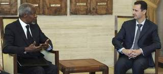
El Gobierno sirio ha aceptado el plan de paz de seis puntos propuesto por el enviado especial de la ONU y la Liga Árabe, Kofi Annan, y que ha sido apoyado por el Consejo de Seguridad de Naciones Unidas, según informó el portavoz de Annan.
Más información en breve.

2012-03-27T04:43:13Z
Monti califica de malentendido sus críticas a España y Rajoy pide a sus socios solidaridad
Monti califica de malentendido sus críticas a España y Rajoy pide a sus socios solidaridad
EFE
El primer ministro italiano dice que sus palabras deben interpretarse como una llamada a todos los socios a "no relajarse en el esfuerzo".
Ha sido Monti quien ha solicitado esta entrevista forma.
El primer ministro italiano, Mario Monti, ha asegurado este martes que sus críticas a la situación económica española fueron un "malentendido" y el presidente del Gobierno español, Mariano Rajoy, le ha recordado la necesidad de que los socios europeos sean "solidarios" en momentos de dificultad. Fuentes del Ejecutivo español han resumido con estas palabras la reunión bilateral que Rajoy y Monti han mantenido en Seúl, donde ambos participan en la Cumbre de Seguridad Nuclear. Monti advirtió el domingo en un acto público que España estaba dando "motivos de gran preocupación a Europa", ya que su situación económica podría provocar "un efecto contagio que podría extenderse por el continente". Este martes ha explicado a Rajoy que sus palabras deben interpretarse como una llamada a todos los socios a "no relajarse en el esfuerzo". Según han señalado las fuentes de la delegación española, tras insistir en que los países monitorizados por Bruselas tienen mucho trabajo por delante, Monti ha destacado que siempre ha subrayado la "rapidez" con la que ha actuado el Ejecutivo español y la "determinación" de su reforma laboral.Elogiar la reforma laboralEl italiano ha garantizado a Rajoy que no es costumbre del Gobierno italiano comentar las políticas de otro país y que, en cualquier caso, sólo lo haría para elogiar la reforma laboral. Rajoy ha escuchado sus palabras y ha recalcado la importancia de que todos los socios europeos se ayuden y sean "solidarios" en un momento complicado. Ha comentado con Monti que el principal problema de la economía española es la desviación del déficit público en 2011, al superarse en 2,5 puntos la cifra comprometida con Bruselas, pero le ha garantizado que España "va a cumplir sus compromisos", aunque el jueves haya convocada una huelga general. En este contexto, como ya avanzó ayer, ha ratificado que los presupuestos generales del Estado que aprobará el viernes el Consejo de Ministros serán "muy austeros" y que las reformas continuarán en lo meses de abril y mayo. Ha sido Monti quien ha solicitado esta entrevista formal con el presidente del Gobierno español, según han informado las fuentes consultadas. El Ejecutivo español había mostrado su malestar por sus críticas a la economía española y ayer, nada más aterrizar en Seúl, Rajoy fue preguntado por esta cuestión. "Dejémoslo en que yo nunca haré declaraciones de ese tipo", señaló.
EFE
- El primer ministro italiano dice que sus palabras deben interpretarse como una llamada a todos los socios a "no relajarse en el esfuerzo".
- Ha sido Monti quien ha solicitado esta entrevista forma.
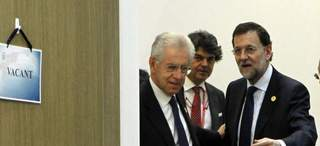
El primer ministro italiano, Mario Monti, ha asegurado este martes que sus críticas a la situación económica española fueron un "malentendido" y el presidente del Gobierno español, Mariano Rajoy, le ha recordado la necesidad de que los socios europeos sean "solidarios" en momentos de dificultad.
Fuentes del Ejecutivo español han resumido con estas palabras la reunión bilateral que Rajoy y Monti han mantenido en Seúl, donde ambos participan en la Cumbre de Seguridad Nuclear.
Monti advirtió el domingo en un acto público que España estaba dando "motivos de gran preocupación a Europa", ya que su situación económica podría provocar "un efecto contagio que podría extenderse por el continente".
Este martes ha explicado a Rajoy que sus palabras deben interpretarse como una llamada a todos los socios a "no relajarse en el esfuerzo".
Según han señalado las fuentes de la delegación española, tras insistir en que los países monitorizados por Bruselas tienen mucho trabajo por delante, Monti ha destacado que siempre ha subrayado la "rapidez" con la que ha actuado el Ejecutivo español y la "determinación" de su reforma laboral.
Elogiar la reforma laboral
El italiano ha garantizado a Rajoy que no es costumbre del Gobierno italiano comentar las políticas de otro país y que, en cualquier caso, sólo lo haría para elogiar la reforma laboral.
Rajoy ha escuchado sus palabras y ha recalcado la importancia de que todos los socios europeos se ayuden y sean "solidarios" en un momento complicado.
Ha comentado con Monti que el principal problema de la economía española es la desviación del déficit público en 2011, al superarse en 2,5 puntos la cifra comprometida con Bruselas, pero le ha garantizado que España "va a cumplir sus compromisos", aunque el jueves haya convocada una huelga general.
En este contexto, como ya avanzó ayer, ha ratificado que los presupuestos generales del Estado que aprobará el viernes el Consejo de Ministros serán "muy austeros" y que las reformas continuarán en lo meses de abril y mayo.
Ha sido Monti quien ha solicitado esta entrevista formal con el presidente del Gobierno español, según han informado las fuentes consultadas.
El Ejecutivo español había mostrado su malestar por sus críticas a la economía española y ayer, nada más aterrizar en Seúl, Rajoy fue preguntado por esta cuestión. "Dejémoslo en que yo nunca haré declaraciones de ese tipo", señaló.
2012-03-26T23:50:50Z
Obama a Medvedev: "Después de las elecciones seré más flexible"
Obama a Medvedev: "Después de las elecciones seré más flexible"
AGENCIAS
La firmeza de su propuesta queda en entredicho gracias a un micrófono abierto.
Es la primera vez que se una propuesta afecta a estos arsenales, hasta ahora intocables para las dos grandes potencias.
Rusia y EE. UU. firmaron un nuevo tratado START en 2010.
Obama tratará el tema con Putin en mayo.
El presidente de EE UU participa en Seúl en la Cumbre sobre Seguridad Nuclear.
El presidente de EE UU, Barack Obama, propuso este a Rusia nuevas reducciones de armas nucleares que se extiendan a áreas intocables hasta ahora, como las armas tácticas o las cabezas nucleares de reserva.Sin embargo, la firmeza de la propuesta del Presidente de EE UU a Rusia ha quedado en entredicho gracias a un micrófono abierto, que ha dado lugar a la anécdota del día.En una conversación privada cuyo audio ha sido captado por las cámaras, Obama indicaba al primer ministro ruso, Dmitry Medvedev, que tendría "más flexibilidad" para tratar con Rusia sobre sus desacuerdos en materia de defensa antimisiles después de ser reelegido.Por ello, pedía a Medvédev que transmitiera a su sucesor, el ex presidente Vladimir Putin, que le diera "espacio" hasta las elecciones de noviembre, a lo que su homólogo ruso replicó que "entiendo. Le transmitiré esta información a Vladimir."Esta es mi última elección. Déspués seré más flexible", aseguró.Algunas horas después Obama conversó nuevamente con el jefe de Estado saliente ruso, aunque en esta ocasión tuvo buen cuidado de cerrar los micrófonos. Con una sonrisa, Obama puso la mano sobre el micrófono mientras hablaba con el líder ruso.Ambos mandatarios intercambiaron unas frases cuando se preparaban para el comienzo de la sesión plenaria de la II Cumbre sobre Seguridad Nuclear que se clausura este martes en Seúl.Durante este lunes, Obama pronunció un discurso ante la Universidad Hankuk de Estudios Extranjeros en Seúl antes de comenzar su participación en la II Cumbre sobre Seguridad Nuclear, que busca garantizar la seguridad de los materiales e instalaciones nucleares en todo el mundo.Esta cumbre es una iniciativa del propio Obama, que en 2009 lanzó en Praga una propuesta para conseguir un mundo futuro sin armas nucleares y que ha suscrito un nuevo tratado START con Rusia de reducción de armamento nuclear. El presidente estadounidense afirmó este lunes que EEUU aún puede "proseguir nuevas reducciones" de armas nucleares. "Podemos mantener nuestro poder de disuasión y al mismo tiempo continuar mayores reducciones" de armamento nuclear, consideró el presidente estadounidense, que indicó que "tenemos más armas nucleares de las que necesitamos". Según recordó, una vez se haya cumplido por completo el nuevo tratado START de desarme nuclear con Rusia, EEUU aún tendrá más de 1.500 armas nucleares desplegadas y en torno a las 5.000 cabezas atómicas. "Creo firmemente que podemos garantizar la seguridad de EEUU y nuestros aliados, mantener una fuerte capacidad disuasoria contra cualquier amenaza y a la vez llevar a cabo reducciones adicionales en nuestro arsenal nuclear". Por ello, agregó, "seguiremos buscando conversaciones con Rusia sobre un paso que nunca hemos emprendido antes: reducir no sólo cabezas nucleares estratégicas, sino también armas tácticas y cabezas de reserva". Así, planteará esta agenda cuando se reúna con el presidente electo ruso, Vladímir Putin, el próximo mayo. La defensa de misiles, agregó, debería ser "un área de cooperación, no de tensión". "Creo que, si colaboramos, podemos continuar logrando progresos y reducir nuestros arsenales nucleares", insistió, antes de matizar que en cualquier caso los avances se producirán en consultas con los aliados estadounidenses. "La seguridad y la defensa de nuestros aliados en Europa y Asia es innegociable", destacó el presidente estadounidense. El presidente estadounidense tiene previsto reunirse con Putin en mayo durante la cumbre del G-8 que se celebrará en Camp David, la residencia de descanso presidencial en las montañas del estado de Maryland.El nuevo tratado STARTAmbos países suscribieron en abril de 2010 en Praga el nuevo tratado START de reducción de armamento nuclear, que el Congreso de EEUU ratificó en diciembre de ese año. Ese tratado reduce en un 30% el número de cabezas nucleares, hasta 1.550 por país, y limita a 800 el de vectores estratégicos, además de introducir un nuevo sistema de inspecciones de los arsenales nucleares. Obama tiene previsto reunirse este viernes en Seúl con el presidente saliente ruso, Dmitri Medvédev, con el que hace tres años, a su llegada a la Casa Blanca, declaró el "reinicio" de las relaciones bilaterales. Pese al "reinicio" y la firma del tratado de reducción nuclear, Moscú y Washington mantienen sus diferencias sobre el escudo de defensa antimisiles que EEUU planea en Europa. A la cumbre que se inaugura este lunes están invitados los jefes de Estado y de Gobierno de más de cincuenta países, que revisarán los avances obtenidos hacia la meta de garantizar la seguridad de todo el material nuclear en el mundo para 2014 y los próximos pasos a dar para conseguirlo. Aunque no figura oficialmente en el programa, la cumbre se desarrolla bajo la sombra de la amenaza de Corea del Norte de lanzar un satélite de observación sobre un misil de largo alcance. En su discurso de hoy, Obama instó a los líderes norcoreanos a "tener la valentía de buscar la paz" y dar una nueva vida a los ciudadanos de Corea del Norte, e insistió en que "no habrá recompensas para las provocaciones". Estados Unidos "no tiene intenciones hostiles hacia su país. Estamos comprometidos con la paz, y estamos dispuestos a dar pasos para mejorar las relaciones", insistió el presidente estadounidense. Obama también aludió al programa nuclear de Irán, al que advirtió que "el tiempo se agota" para resolver la disputa por la vía diplomática.
AGENCIAS
- La firmeza de su propuesta queda en entredicho gracias a un micrófono abierto.
- Es la primera vez que se una propuesta afecta a estos arsenales, hasta ahora intocables para las dos grandes potencias.
- Rusia y EE. UU. firmaron un nuevo tratado START en 2010.
- Obama tratará el tema con Putin en mayo.
- El presidente de EE UU participa en Seúl en la Cumbre sobre Seguridad Nuclear.
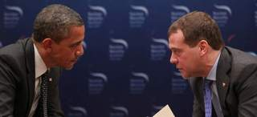
El presidente de EE UU, Barack Obama, propuso este a Rusia nuevas reducciones de armas nucleares que se extiendan a áreas intocables hasta ahora, como las armas tácticas o las cabezas nucleares de reserva.
Sin embargo, la firmeza de la propuesta del Presidente de EE UU a Rusia ha quedado en entredicho gracias a un micrófono abierto, que ha dado lugar a la anécdota del día.
En una conversación privada cuyo audio ha sido captado por las cámaras, Obama indicaba al primer ministro ruso, Dmitry Medvedev, que tendría "más flexibilidad" para tratar con Rusia sobre sus desacuerdos en materia de defensa antimisiles después de ser reelegido.
Por ello, pedía a Medvédev que transmitiera a su sucesor, el ex presidente Vladimir Putin, que le diera "espacio" hasta las elecciones de noviembre, a lo que su homólogo ruso replicó que "entiendo. Le transmitiré esta información a Vladimir.
"Esta es mi última elección. Déspués seré más flexible", aseguró.
Algunas horas después Obama conversó nuevamente con el jefe de Estado saliente ruso, aunque en esta ocasión tuvo buen cuidado de cerrar los micrófonos. Con una sonrisa, Obama puso la mano sobre el micrófono mientras hablaba con el líder ruso.
Ambos mandatarios intercambiaron unas frases cuando se preparaban para el comienzo de la sesión plenaria de la II Cumbre sobre Seguridad Nuclear que se clausura este martes en Seúl.
Durante este lunes, Obama pronunció un discurso ante la Universidad Hankuk de Estudios Extranjeros en Seúl antes de comenzar su participación en la II Cumbre sobre Seguridad Nuclear, que busca garantizar la seguridad de los materiales e instalaciones nucleares en todo el mundo.
Esta cumbre es una iniciativa del propio Obama, que en 2009 lanzó en Praga una propuesta para conseguir un mundo futuro sin armas nucleares y que ha suscrito un nuevo tratado START con Rusia de reducción de armamento nuclear.
El presidente estadounidense afirmó este lunes que EEUU aún puede "proseguir nuevas reducciones" de armas nucleares.
"Podemos mantener nuestro poder de disuasión y al mismo tiempo continuar mayores reducciones" de armamento nuclear, consideró el presidente estadounidense, que indicó que "tenemos más armas nucleares de las que necesitamos".
Según recordó, una vez se haya cumplido por completo el nuevo tratado START de desarme nuclear con Rusia, EEUU aún tendrá más de 1.500 armas nucleares desplegadas y en torno a las 5.000 cabezas atómicas.
"Creo firmemente que podemos garantizar la seguridad de EEUU y nuestros aliados, mantener una fuerte capacidad disuasoria contra cualquier amenaza y a la vez llevar a cabo reducciones adicionales en nuestro arsenal nuclear".
Por ello, agregó, "seguiremos buscando conversaciones con Rusia sobre un paso que nunca hemos emprendido antes: reducir no sólo cabezas nucleares estratégicas, sino también armas tácticas y cabezas de reserva".
Así, planteará esta agenda cuando se reúna con el presidente electo ruso, Vladímir Putin, el próximo mayo.
La defensa de misiles, agregó, debería ser "un área de cooperación, no de tensión".
"Creo que, si colaboramos, podemos continuar logrando progresos y reducir nuestros arsenales nucleares", insistió, antes de matizar que en cualquier caso los avances se producirán en consultas con los aliados estadounidenses.
"La seguridad y la defensa de nuestros aliados en Europa y Asia es innegociable", destacó el presidente estadounidense.
El presidente estadounidense tiene previsto reunirse con Putin en mayo durante la cumbre del G-8 que se celebrará en Camp David, la residencia de descanso presidencial en las montañas del estado de Maryland.
El nuevo tratado START
Ambos países suscribieron en abril de 2010 en Praga el nuevo tratado START de reducción de armamento nuclear, que el Congreso de EEUU ratificó en diciembre de ese año.
Ese tratado reduce en un 30% el número de cabezas nucleares, hasta 1.550 por país, y limita a 800 el de vectores estratégicos, además de introducir un nuevo sistema de inspecciones de los arsenales nucleares.
Obama tiene previsto reunirse este viernes en Seúl con el presidente saliente ruso, Dmitri Medvédev, con el que hace tres años, a su llegada a la Casa Blanca, declaró el "reinicio" de las relaciones bilaterales.
Pese al "reinicio" y la firma del tratado de reducción nuclear, Moscú y Washington mantienen sus diferencias sobre el escudo de defensa antimisiles que EEUU planea en Europa.
A la cumbre que se inaugura este lunes están invitados los jefes de Estado y de Gobierno de más de cincuenta países, que revisarán los avances obtenidos hacia la meta de garantizar la seguridad de todo el material nuclear en el mundo para 2014 y los próximos pasos a dar para conseguirlo.
Aunque no figura oficialmente en el programa, la cumbre se desarrolla bajo la sombra de la amenaza de Corea del Norte de lanzar un satélite de observación sobre un misil de largo alcance.
En su discurso de hoy, Obama instó a los líderes norcoreanos a "tener la valentía de buscar la paz" y dar una nueva vida a los ciudadanos de Corea del Norte, e insistió en que "no habrá recompensas para las provocaciones".
Estados Unidos "no tiene intenciones hostiles hacia su país. Estamos comprometidos con la paz, y estamos dispuestos a dar pasos para mejorar las relaciones", insistió el presidente estadounidense.
Obama también aludió al programa nuclear de Irán, al que advirtió que "el tiempo se agota" para resolver la disputa por la vía diplomática.
2012-03-26T21:21:17Z
El asesino de Toulouse envió un vídeo de los asesinatos a la sede en París de Al-Jazeera
El asesino de Toulouse envió un vídeo de los asesinatos a la sede en París de Al-Jazeera
EFE
El paquete recibido por la televisión catarí contenía una tarjeta de memoria y una carta y fue entregado a la policía judicial, que autentificó el vídeo.
El correo fue enviado el pasado martes por la noche o el miércoles por la mañana, mientra que Merah murió el jueves por disparos de la Policía.
Varios testigos habían visto la cámara que portaba en su pecho Mohamed Merah, de 23 años, acribillado el pasado 22 de marzo por la policía.
El asesino de Toulouse, Mohamed Merah, envió un vídeo a la sede en París del canal Al-Jazeera con imágenes de los siete asesinatos que perpetró en esa ciudad del sur de Francia y en la vecina Montauban.Según informa el diario le Parisien en su página web, el paquete recibido por la televisión catarí contenía una tarjeta de memoria y una carta y fue entregado a la policía judicial, que autentificó el vídeo.El correo fue enviado a los locales de la televisión de Catar el pasado martes por la noche o el miércoles por la mañana. Merah murió el jueves por disparos de la Policía tras un asedio de 32 horas en su vivienda de Toulouse.El rotativo precisó que el matasellos era del miércoles pasado, cuando Mohamed Merah estaba acorralado en su apartamento de Toulouse, por lo que la policía intenta averiguar si fue enviado la víspera por él mismo o el miércoles por la mañana por un cómplice, añadió.Varios testigos habían visto la cámara que portaba en su pecho Mohamed Merah, de 23 años, acribillado el pasado 22 de marzo por la policía.Antes de su muerte, se atribuyó los crímenes de tres paracaidistas franceses en Toulouse y Montauban y de tres niños de una escuela judía de Toulouse, así como del padre de dos de ellos, y aseguró que había actuado solo.Su hermano mayor, Abdelkader Merah, fue imputado este domingo por complicidad en los siete asesinatos confesados por su hermano Mohamed en el sur de Francia, crímenes en los que los investigadores no descartan la participación de otras personas.
EFE
- El paquete recibido por la televisión catarí contenía una tarjeta de memoria y una carta y fue entregado a la policía judicial, que autentificó el vídeo.
- El correo fue enviado el pasado martes por la noche o el miércoles por la mañana, mientra que Merah murió el jueves por disparos de la Policía.
- Varios testigos habían visto la cámara que portaba en su pecho Mohamed Merah, de 23 años, acribillado el pasado 22 de marzo por la policía.
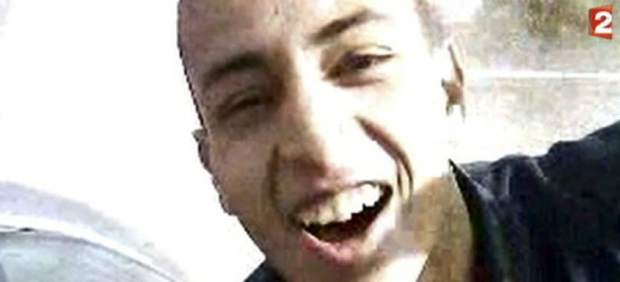
El asesino de Toulouse, Mohamed Merah, envió un vídeo a la sede en París del canal Al-Jazeera con imágenes de los siete asesinatos que perpetró en esa ciudad del sur de Francia y en la vecina Montauban.
Según informa el diario le Parisien en su página web, el paquete recibido por la televisión catarí contenía una tarjeta de memoria y una carta y fue entregado a la policía judicial, que autentificó el vídeo.
El correo fue enviado a los locales de la televisión de Catar el pasado martes por la noche o el miércoles por la mañana. Merah murió el jueves por disparos de la Policía tras un asedio de 32 horas en su vivienda de Toulouse.
El rotativo precisó que el matasellos era del miércoles pasado, cuando Mohamed Merah estaba acorralado en su apartamento de Toulouse, por lo que la policía intenta averiguar si fue enviado la víspera por él mismo o el miércoles por la mañana por un cómplice, añadió.
Varios testigos habían visto la cámara que portaba en su pecho Mohamed Merah, de 23 años, acribillado el pasado 22 de marzo por la policía.
Antes de su muerte, se atribuyó los crímenes de tres paracaidistas franceses en Toulouse y Montauban y de tres niños de una escuela judía de Toulouse, así como del padre de dos de ellos, y aseguró que había actuado solo.
Su hermano mayor, Abdelkader Merah, fue imputado este domingo por complicidad en los siete asesinatos confesados por su hermano Mohamed en el sur de Francia, crímenes en los que los investigadores no descartan la participación de otras personas.
2012-03-26T19:22:58Z
Se subastan por primera vez en la historia 5.500 objetos del Titanic
Se subastan por primera vez en la historia 5.500 objetos del Titanic
EFE
Los compradores deberán garantizar el acceso del público a los objetos.
La colección se ha reunido a lo largo de diecisiete años y está valorada en más de 141 millones de euros.
Todo aquel que sienta fascinación por el Titanic y su leyenda tiene la oportunidad, por primera vez en la historia, de conseguir alguno de los 5.500 objetos que se rescataron del fondo del océano Atlántico en una subasta que se celebrará el próximo mes de abril en Nueva York, coincidiendo con el centenario del hundimiento del trasatlántico.Entre las reliquias encontramos verdaderos misterios. Uno de los objetos subastados, el más curioso según Arlan Ettinger, presiente de la casa Guernsey's, la cual llevará a cabo la subasta, son unos prismáticos que posiblemente pudieron ser los que el vigía del Titanic perdió, motivo por el cual no pudo avistar el iceberg que provoco el catastrófico accidente la madrugada del 15 de abril de 1912. "Quién sabe, quizás estos prismáticos que ahora se subastan sean los que se perdieron, los que hubieran permitido al barco esquivar el iceberg y evitar aquella tragedia en la que murieron más de 1.500 personas", aseguró hoy Ettinger.Esta colección de vestigios se ha reunido a lo largo de diecisiete años, desde que en 1987 se iniciaran las inmersiones para recuperar los restos del naufragio. La subasta se realizará desde el 2 de abril, y también podremos encontrar en ella una pieza del hall del barco o un pequeño brazalete de oro con un diamante engarzado. Algunos son tan "curiosos" como un tarro de pomada para el cabello masculino, que se conserva intacto, el gorro de panadero, un billete de cinco dólares o unas postales compradas en Londres por uno de los pasajeros, que las llevaba, seguramente, de vuelta a Estados Unidos como recuerdo.Estas reliquias, que fueron tasadas en 189 millones de dólares (141 millones de euros) han pertenecido a RMS Titanic Inc. durante los últimos 25 años. Las reliquias deberán estar abiertas al públicoLos 5.500 objetos, que incluyen material con derechos de autor como miles de horas de metraje de vídeo y mapas tridimensionales de las dependencias interiores del barco, se venderán, por orden de un tribunal estadounidense, como una colección única, por razones de preservación histórica.Los interesados pueden pujar desde este lunes, y los ganadores, que se conocerán el próximo 2 de abril, han de comprometerse a mantener la colección reunida, lo que se traduce en que deben garantizar el acceso del público a las piezas, estén donde estén, "para que las generaciones futuras tengan la oportunidad de aprender y entender lo que ocurrió", declaro Arlan Ettinger.El presidente de la casa de subastas añadió que el Titanic "se está deteriorando rápidamente bajo el mar, y llegará un momento en que desaparecerá por completo, y estos objetos serán lo único que quedará por ello, es necesario preservarlos como muestras de la historia del Titanic.
EFE
- Los compradores deberán garantizar el acceso del público a los objetos.
- La colección se ha reunido a lo largo de diecisiete años y está valorada en más de 141 millones de euros.
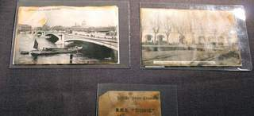
Todo aquel que sienta fascinación por el Titanic y su leyenda tiene la oportunidad, por primera vez en la historia, de conseguir alguno de los 5.500 objetos que se rescataron del fondo del océano Atlántico en una subasta que se celebrará el próximo mes de abril en Nueva York, coincidiendo con el centenario del hundimiento del trasatlántico.
Entre las reliquias encontramos verdaderos misterios. Uno de los objetos subastados, el más curioso según Arlan Ettinger, presiente de la casa Guernsey's, la cual llevará a cabo la subasta, son unos prismáticos que posiblemente pudieron ser los que el vigía del Titanic perdió, motivo por el cual no pudo avistar el iceberg que provoco el catastrófico accidente la madrugada del 15 de abril de 1912. "Quién sabe, quizás estos prismáticos que ahora se subastan sean los que se perdieron, los que hubieran permitido al barco esquivar el iceberg y evitar aquella tragedia en la que murieron más de 1.500 personas", aseguró hoy Ettinger.
Esta colección de vestigios se ha reunido a lo largo de diecisiete años, desde que en 1987 se iniciaran las inmersiones para recuperar los restos del naufragio. La subasta se realizará desde el 2 de abril, y también podremos encontrar en ella una pieza del hall del barco o un pequeño brazalete de oro con un diamante engarzado.
Algunos son tan "curiosos" como un tarro de pomada para el cabello masculino, que se conserva intacto, el gorro de panadero, un billete de cinco dólares o unas postales compradas en Londres por uno de los pasajeros, que las llevaba, seguramente, de vuelta a Estados Unidos como recuerdo.
Estas reliquias, que fueron tasadas en 189 millones de dólares (141 millones de euros) han pertenecido a RMS Titanic Inc. durante los últimos 25 años.
Las reliquias deberán estar abiertas al público
Los 5.500 objetos, que incluyen material con derechos de autor como miles de horas de metraje de vídeo y mapas tridimensionales de las dependencias interiores del barco, se venderán, por orden de un tribunal estadounidense, como una colección única, por razones de preservación histórica.
Los interesados pueden pujar desde este lunes, y los ganadores, que se conocerán el próximo 2 de abril, han de comprometerse a mantener la colección reunida, lo que se traduce en que deben garantizar el acceso del público a las piezas, estén donde estén, "para que las generaciones futuras tengan la oportunidad de aprender y entender lo que ocurrió", declaro Arlan Ettinger.
El presidente de la casa de subastas añadió que el Titanic "se está deteriorando rápidamente bajo el mar, y llegará un momento en que desaparecerá por completo, y estos objetos serán lo único que quedará por ello, es necesario preservarlos como muestras de la historia del Titanic.
2012-03-26T16:32:45Z
Un hombre austriaco se amputa un pie para no tener que trabajar
Un hombre austriaco se amputa un pie para no tener que trabajar
EFE
Cogió una sierra eléctrica, se cercenó la extremidad y la tiró a una caldera del sótano de su casa.
Se encontraba de baja y tenía una entrevista en la oficina de empleo.
El hombre se encuentra en coma inducido por la gran pérdida de sangre.
Un hombre de 56 años en situación de desempleo se ha mutilado su propio pie con una sierra eléctrica para no tener que asistir a una revisión médica en la que se iba a decidir si debía o no volver a incorporarse a su puesto de trabajo.Al hombre le habían citado en la oficina de empleo del estado federado de Estiria, en el sur de Austria, la mañana de este lunes. Para evitar la cita decidió cortarse el pie izquierdo desde el tobillo lo que le provocó una gran pérdida de sangre, ha informado la emisora pública ORF.Alrededor de las seis de la mañana, el austríaco bajó al sótano de su casa, situada en la localidad de Mitterlabill, al sur de la capital regional de Graz, cogió una sierra eléctrica y con pleno conocimiento de sus actos se seccionó el pie y lo tiró a una caldera. Seguidamente se arrastró malherido hasta un teléfono y llamó a una ambulancia, que acudió al lugar de los hechos en pocos minutos, aunque apenas pudo estabilizar la situación ante la enorme pérdida de sangre que había sufrido a causa de la amputación.Según la emisora, el hombre tuvo que ser trasladado en helicóptero a una clínica de Graz, donde los médicos le provocaron un coma inducido por la gravedad de las heridas. Su vida todavía corre peligro.Austria, un país con un amplio sistema de bienestar social, es el Estado miembro de la Unión Europea con la tasa más baja de desempleo, de un 4,0 por ciento, según las estadísticas comunitarias.
EFE
- Cogió una sierra eléctrica, se cercenó la extremidad y la tiró a una caldera del sótano de su casa.
- Se encontraba de baja y tenía una entrevista en la oficina de empleo.
- El hombre se encuentra en coma inducido por la gran pérdida de sangre.
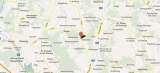
Un hombre de 56 años en situación de desempleo se ha mutilado su propio pie con una sierra eléctrica para no tener que asistir a una revisión médica en la que se iba a decidir si debía o no volver a incorporarse a su puesto de trabajo.
Al hombre le habían citado en la oficina de empleo del estado federado de Estiria, en el sur de Austria, la mañana de este lunes. Para evitar la cita decidió cortarse el pie izquierdo desde el tobillo lo que le provocó una gran pérdida de sangre, ha informado la emisora pública ORF.
Alrededor de las seis de la mañana, el austríaco bajó al sótano de su casa, situada en la localidad de Mitterlabill, al sur de la capital regional de Graz, cogió una sierra eléctrica y con pleno conocimiento de sus actos se seccionó el pie y lo tiró a una caldera.
Seguidamente se arrastró malherido hasta un teléfono y llamó a una ambulancia, que acudió al lugar de los hechos en pocos minutos, aunque apenas pudo estabilizar la situación ante la enorme pérdida de sangre que había sufrido a causa de la amputación.
Según la emisora, el hombre tuvo que ser trasladado en helicóptero a una clínica de Graz, donde los médicos le provocaron un coma inducido por la gravedad de las heridas. Su vida todavía corre peligro.
Austria, un país con un amplio sistema de bienestar social, es el Estado miembro de la Unión Europea con la tasa más baja de desempleo, de un 4,0 por ciento, según las estadísticas comunitarias.
2012-03-26T10:51:54Z
Japón cierra su penúltimo reactor nuclear en funcionamiento
Japón cierra su penúltimo reactor nuclear en funcionamiento
AGENCIAS
Japón cierra su penúltimo reactor, el 6 de Kashiwazaki-Kariwa.
De 54 que tenía, tras la crisis de Fukushima solo queda uno en funcionamiento, que parará en mayo.
El Gobierno quiere hacer pruebas de resistencia y reabrirlos con el apoyo de las regiones y ciudades que los albergan, algo que será complicado.
Existe el temor de falta de suministro eléctrico de cara al verano.
El cierre este lunes del reactor 6 de la central nuclear de Kashiwazaki-Kariwa dejó a Japón con una sola unidad atómica operativa tras la crisis de Fukushima, lo que aumenta la incertidumbre sobre su suficiencia eléctrica de cara al verano. A primera hora Tokyo Electric Power (TEPCO), operadora de la planta de Kashiwazaki-Kariwa en Niigata (noroeste) y también de la maltrecha central de Fukushima, anunció la parada del reactor para su revisión regular y situó a Japón, con 53 de sus 54 reactores detenidos, al borde del apagón nuclear completo. Tras la parada total de la planta de Niigata, ahora el único reactor operativo en Japón es el número 3 de la planta de Tomari (en la isla septentrional de Hokkaido) que anunció este lunes que suspenderá su actividad el próximo 5 de mayo. Desde que el devastador terremoto y tsunami de marzo de 2011 provocara la peor crisis nuclear en 25 años, ninguno de los reactores del archipiélago detenidos por seguridad o para someterse a las revisiones que cada 13 meses estipula la ley ha sido reactivado. El Gobierno de Japón, un país que antes de Fukushima dependía en cerca de un 30% de la energía nuclear, impuso tras el accidente unas pruebas de resistencia a los reactores que deben determinar que éstos son seguros en caso de terremoto y tsunami antes de ser puestos en funcionamiento de nuevo.Este lunes mismo la Agencia de Seguridad Nuclear dio el visto bueno a las pruebas de este tipo realizadas al reactor de Ikata, en la isla de Kyushu (sur), lo que lo convierten en el tercero que supera este examen de seguridad. Sin embargo, antes de aprobar la reactivación de los reactores que superen las pruebas, el Gobierno quiere contar con el apoyo de las regiones y ciudades que acogen las centrales y que piden más seguridad para evitar que se repita un accidente como el de Fukushima. El primer ministro nipón, Yoshihiko Noda, ha mantenido hasta ahora este compromiso pese a que su Gobierno ya ha anunciado que si todos las unidades atómicas del país están detenidas en verano, el suministro eléctrico podría reducirse un 10% con respecto al año pasado. Convencer a los gobiernos locales para que den su aprobación promete ser tarea difícil, ya que, por ejemplo, el de Osaka (centro), tercera ciudad del país, ya ha anunciado que apoya directamente el desmantelamiento de las centrales nucleares. "El pueblo de Japón se ha dado cuenta de que la energía nuclear no es segura, y cada día que pasa con los reactores detenidos subraya el hecho de que no es necesaria", afirmó por su parte el director local de Greenpeace, Junichi Sato.¿Problemas de suministro para verano?Por otro lado, las eléctricas esperan poder cubrir la demanda, que alcanzará su pico durante el caluroso y húmedo verano nipón, con el aumento de la generación en sus plantas térmicas. "Haremos los mayores esfuerzos para asegurar un suministro estable", afirmó hoy el presidente de TEPCO, Toshio Nishizawa, cuya empresa deberá intentar abastecer de electricidad a la zona metropolitana de Tokio, con más de 30 millones de habitantes, sin contar con ninguno de sus 17 reactores nucleares en funcionamiento. Durante el verano de 2011, cuando 35 de los 54 reactores de Japón se encontraban detenidos, el Gobierno y las eléctricas solicitaron a hogares y empresas reducir en un 15% su consumo en los meses de mayor demanda, lo que llevó a importantes cambios y recortes en fábricas y transporte público. A la incertidumbre sobre la viabilidad del suministro eléctrico se suma además el mayor coste que le supone al país asiático, muy dependiente en términos energéticos, el potenciar la generación de sus plantas térmicas, que hasta ahora ha implicado un incremento en el gasto en la importación de hidrocarburos. Japón, cuya economía depende en un 40% de sus exportaciones, registró en enero de 2012 su mayor déficit comercial en los últimos 33 años en parte por el incremento de las importaciones en energía.
AGENCIAS
- Japón cierra su penúltimo reactor, el 6 de Kashiwazaki-Kariwa.
- De 54 que tenía, tras la crisis de Fukushima solo queda uno en funcionamiento, que parará en mayo.
- El Gobierno quiere hacer pruebas de resistencia y reabrirlos con el apoyo de las regiones y ciudades que los albergan, algo que será complicado.
- Existe el temor de falta de suministro eléctrico de cara al verano.
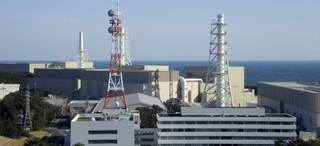
El cierre este lunes del reactor 6 de la central nuclear de Kashiwazaki-Kariwa dejó a Japón con una sola unidad atómica operativa tras la crisis de Fukushima, lo que aumenta la incertidumbre sobre su suficiencia eléctrica de cara al verano.
A primera hora Tokyo Electric Power (TEPCO), operadora de la planta de Kashiwazaki-Kariwa en Niigata (noroeste) y también de la maltrecha central de Fukushima, anunció la parada del reactor para su revisión regular y situó a Japón, con 53 de sus 54 reactores detenidos, al borde del apagón nuclear completo.
Tras la parada total de la planta de Niigata, ahora el único reactor operativo en Japón es el número 3 de la planta de Tomari (en la isla septentrional de Hokkaido) que anunció este lunes que suspenderá su actividad el próximo 5 de mayo.
Desde que el devastador terremoto y tsunami de marzo de 2011 provocara la peor crisis nuclear en 25 años, ninguno de los reactores del archipiélago detenidos por seguridad o para someterse a las revisiones que cada 13 meses estipula la ley ha sido reactivado.
El Gobierno de Japón, un país que antes de Fukushima dependía en cerca de un 30% de la energía nuclear, impuso tras el accidente unas pruebas de resistencia a los reactores que deben determinar que éstos son seguros en caso de terremoto y tsunami antes de ser puestos en funcionamiento de nuevo.
Este lunes mismo la Agencia de Seguridad Nuclear dio el visto bueno a las pruebas de este tipo realizadas al reactor de Ikata, en la isla de Kyushu (sur), lo que lo convierten en el tercero que supera este examen de seguridad.
Sin embargo, antes de aprobar la reactivación de los reactores que superen las pruebas, el Gobierno quiere contar con el apoyo de las regiones y ciudades que acogen las centrales y que piden más seguridad para evitar que se repita un accidente como el de Fukushima.
El primer ministro nipón, Yoshihiko Noda, ha mantenido hasta ahora este compromiso pese a que su Gobierno ya ha anunciado que si todos las unidades atómicas del país están detenidas en verano, el suministro eléctrico podría reducirse un 10% con respecto al año pasado.
Convencer a los gobiernos locales para que den su aprobación promete ser tarea difícil, ya que, por ejemplo, el de Osaka (centro), tercera ciudad del país, ya ha anunciado que apoya directamente el desmantelamiento de las centrales nucleares.
"El pueblo de Japón se ha dado cuenta de que la energía nuclear no es segura, y cada día que pasa con los reactores detenidos subraya el hecho de que no es necesaria", afirmó por su parte el director local de Greenpeace, Junichi Sato.
¿Problemas de suministro para verano?
Por otro lado, las eléctricas esperan poder cubrir la demanda, que alcanzará su pico durante el caluroso y húmedo verano nipón, con el aumento de la generación en sus plantas térmicas.
"Haremos los mayores esfuerzos para asegurar un suministro estable", afirmó hoy el presidente de TEPCO, Toshio Nishizawa, cuya empresa deberá intentar abastecer de electricidad a la zona metropolitana de Tokio, con más de 30 millones de habitantes, sin contar con ninguno de sus 17 reactores nucleares en funcionamiento.
Durante el verano de 2011, cuando 35 de los 54 reactores de Japón se encontraban detenidos, el Gobierno y las eléctricas solicitaron a hogares y empresas reducir en un 15% su consumo en los meses de mayor demanda, lo que llevó a importantes cambios y recortes en fábricas y transporte público.
A la incertidumbre sobre la viabilidad del suministro eléctrico se suma además el mayor coste que le supone al país asiático, muy dependiente en términos energéticos, el potenciar la generación de sus plantas térmicas, que hasta ahora ha implicado un incremento en el gasto en la importación de hidrocarburos.
Japón, cuya economía depende en un 40% de sus exportaciones, registró en enero de 2012 su mayor déficit comercial en los últimos 33 años en parte por el incremento de las importaciones en energía.
2012-03-26T05:39:58Z
Senegal celebra la alternancia en el poder con la abrumadora victoria de Macky Sall
Senegal celebra la alternancia en el poder con la abrumadora victoria de Macky Sall
EFE
Obtiene cerca del 70% de los votos y es el cuarto presidente de Senegal.
Su victoria termina con el controvertido y hasta entonces presidente Wade.
La elección llega tras unas protestas que han dejado al menos ocho muertos.
El ingeniero Macky Sall se ha proclamado nuevo presidente deSenegal, que celebró este domingo la segunda ronda de los comicios presidenciales, terminando así con la controvertida carrera del hasta entonces presidente, Abdoulaye Wade.Unos cinco millones de senegaleses estaban llamados a las urnas para decidir el que sería el futuro presidente del país, un cargo que se disputaban el actual mandatario, Wade, y su exprimer ministro Sall.El hasta ahora opositor consiguió una victoria abrumadora, con cerca del 70 por ciento de los sufragios.Una era nueva se abre para SenegalEl desempate en las urnas llega después de que, el pasado 26 de febrero, Wade y Sall se convirtieran en los candidatos más votados, con un 34,81 y un 26,58 por ciento de los sufragios, respectivamente.Wade, de 85 años y en el poder desde el año 2000, aspiraba a un polémico tercer mandato, considerado ilegal por la oposición y las organizaciones de la sociedad civil que recuerdan que la Constitución del país africano limita la estancia en el poder a dos.Sin embargo, el Consejo Constitucional senegalés validó la candidatura de Wade, pese a una campaña de protestas de la oposición que causó al menos ocho muertos y un número indeterminado de heridos en enfrentamientos entre manifestantes y Fuerzas de Seguridad.Macky Sall, ingeniero de 52 años, quien se convierte en el cuarto presidente de la república, abandonó en 2008 el gobernante Partido Democrático Senegal a causa de profundas discrepancias con Wade y creó su propio grupo, la Alianza para la República.Se presentó en las elecciones presidenciales bajo la bandera de la coalición Macky 2012, integrada por decenas de partidos y asociaciones de la sociedad civil."Seré el presidente de todos los senegaleses", puntualizó el nuevo mandatario electo.El nuevo gobernante rindió homenaje a los "mártires de la democracia", en alusión a las víctimas mortales -al menos ocho- que se han registrado en las manifestaciones contra la polémica candidatura de Wade por un tercer mandato."Una era nueva se abre para Senegal", añadió Sall, quien reafirmar su determinación para cumplir con las "inmensas expectativas" de sus conciudadanos, e invitó a todos a implicarse en las tareas de reconstrucción nacional.IncidentesLa jornada electoral registró algunos incidentes aislados pero en general transcurrió con tranquilidad.A pesar del ambiente de calma generalizada en el que transcurrieron las votaciones, hubo algunos incidentes aislados, como el registrado en un colegio electoral de la localidad de Diouloulou (sur), fronteriza con Gambia, que fue atacado por individuos armados.Según la emisora local RFM, el colegio electoral, en la provincia secesionista de Casamance, fue atacada por supuestos miembros del Movimiento de las Fuerzas Democráticas de esa región (MFDC), quienes quemaron las urnas y dispersaron a los votantes.Además, la Policía ahuyentó con gas lacrimógeno a numerosos simpatizantes de Wade, y también a seguidores de la oposición, concentrados en el colegio electoral en el que el presidente y candidato a la reelección por el Partido Democrático Senegalés (PDS), se disponía a votar.Tanto la misión de observación conjunta de la Unión Africana (UA) y la Comunidad Económica de los Estados de África Occidental (CEDEAO), como la de la Unión Europea (UE), elogiaron el buen desarrollo de las votaciones.Más de 5.000 observadores de misiones nacionales e internacionales, entre ellas la UA y la UE, se han encargado de supervisar las votaciones con equipos desplegados por todo el país.
EFE
- Obtiene cerca del 70% de los votos y es el cuarto presidente de Senegal.
- Su victoria termina con el controvertido y hasta entonces presidente Wade.
- La elección llega tras unas protestas que han dejado al menos ocho muertos.
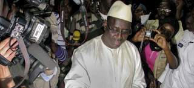
El ingeniero Macky Sall se ha proclamado nuevo presidente deSenegal, que celebró este domingo la segunda ronda de los comicios presidenciales, terminando así con la controvertida carrera del hasta entonces presidente, Abdoulaye Wade.
Unos cinco millones de senegaleses estaban llamados a las urnas para decidir el que sería el futuro presidente del país, un cargo que se disputaban el actual mandatario, Wade, y su exprimer ministro Sall.
El hasta ahora opositor consiguió una victoria abrumadora, con cerca del 70 por ciento de los sufragios.Una era nueva se abre para Senegal
El desempate en las urnas llega después de que, el pasado 26 de febrero, Wade y Sall se convirtieran en los candidatos más votados, con un 34,81 y un 26,58 por ciento de los sufragios, respectivamente.
Wade, de 85 años y en el poder desde el año 2000, aspiraba a un polémico tercer mandato, considerado ilegal por la oposición y las organizaciones de la sociedad civil que recuerdan que la Constitución del país africano limita la estancia en el poder a dos.
Sin embargo, el Consejo Constitucional senegalés validó la candidatura de Wade, pese a una campaña de protestas de la oposición que causó al menos ocho muertos y un número indeterminado de heridos en enfrentamientos entre manifestantes y Fuerzas de Seguridad.
Macky Sall, ingeniero de 52 años, quien se convierte en el cuarto presidente de la república, abandonó en 2008 el gobernante Partido Democrático Senegal a causa de profundas discrepancias con Wade y creó su propio grupo, la Alianza para la República.
Se presentó en las elecciones presidenciales bajo la bandera de la coalición Macky 2012, integrada por decenas de partidos y asociaciones de la sociedad civil.
"Seré el presidente de todos los senegaleses", puntualizó el nuevo mandatario electo.
El nuevo gobernante rindió homenaje a los "mártires de la democracia", en alusión a las víctimas mortales -al menos ocho- que se han registrado en las manifestaciones contra la polémica candidatura de Wade por un tercer mandato.
"Una era nueva se abre para Senegal", añadió Sall, quien reafirmar su determinación para cumplir con las "inmensas expectativas" de sus conciudadanos, e invitó a todos a implicarse en las tareas de reconstrucción nacional.
Incidentes
La jornada electoral registró algunos incidentes aislados pero en general transcurrió con tranquilidad.
A pesar del ambiente de calma generalizada en el que transcurrieron las votaciones, hubo algunos incidentes aislados, como el registrado en un colegio electoral de la localidad de Diouloulou (sur), fronteriza con Gambia, que fue atacado por individuos armados.
Según la emisora local RFM, el colegio electoral, en la provincia secesionista de Casamance, fue atacada por supuestos miembros del Movimiento de las Fuerzas Democráticas de esa región (MFDC), quienes quemaron las urnas y dispersaron a los votantes.
Además, la Policía ahuyentó con gas lacrimógeno a numerosos simpatizantes de Wade, y también a seguidores de la oposición, concentrados en el colegio electoral en el que el presidente y candidato a la reelección por el Partido Democrático Senegalés (PDS), se disponía a votar.
Tanto la misión de observación conjunta de la Unión Africana (UA) y la Comunidad Económica de los Estados de África Occidental (CEDEAO), como la de la Unión Europea (UE), elogiaron el buen desarrollo de las votaciones.
Más de 5.000 observadores de misiones nacionales e internacionales, entre ellas la UA y la UE, se han encargado de supervisar las votaciones con equipos desplegados por todo el país.
2012-03-26T02:44:31Z
Seúl acoge la Cumbre de Seguridad Nuclear bajo la sombra norcoreana
Seúl acoge la Cumbre de Seguridad Nuclear bajo la sombra norcoreana
EFE / VÍDEO: ATLAS
Los líderes de más de 50 países se reúnen para a asegurar los materiales atómicos y prevenir la amenaza del terrorismo nuclear.
La situación en Corea del Norte promete dominar la cumbre, aunque no figura en la agenda oficial ni Pyongyang participa en ella.
Obama buscará conversaciones con Rusia para recortar armamento.
Además, Japón detuvo este domingo su penúltimo reactor nuclear activo tras la crisis de Fukushima.
Obama: "la vía diplomática con Irán se está agotando".
Los líderes de más de 50 países comienzan este lunes en Seúl una cumbre dirigida a asegurar los materiales atómicos y prevenir la amenaza del terrorismo nuclear, en una cita ensombrecida por el programa atómico de Corea del Norte.En la capital surcoreana se encuentran ya buena parte de los líderes que participarán en la reunión, entre ellos el presidente de EE UU, Barack Obama, que mantendrá encuentros bilaterales con el jefe del Estado chino, Hu Jintao, y el presidente saliente ruso, Dmitri Medvédev.Con ellos abordará, antes del inicio de la cumbre, la tensión con Pyongyang tras su anuncio de que lanzará un satélite de observación en abril, lo que muchos consideran una prueba encubierta para el desarrollo de misiles balísticos.El programa nuclear de Corea del Norte no está incluido en la agenda de la reuniónLa cuestión norcoreana dominó este domingo el encuentro que mantuvieron Obama y el presidente surcoreano y anfitrión de la cumbre, Lee Myung-bak, que indicaron que los planes de Pyongyang son una violación de sus propios compromisos y le instaron a desistir del lanzamiento.Aunque presente en las bilaterales al margen de la cumbre, el programa nuclear de Corea del Norte no está incluido en la agenda de la reunión, que busca aumentar la conciencia de seguridad nuclear y asegurar materiales como el uranio altamente enriquecido y el plutonio para evitar que caigan en manos de grupos hostiles.La cumbre de Seúl toma el testigo de la celebrada en Washington en 2010, en la que los líderes se comprometieron a proteger el material nuclear "vulnerable" en cuatro años y reforzar los mecanismos de cooperación existentes.Corea de NorteBarack Obama, instó este lunes a los líderes norcoreanos a que tengan "la valentía de buscar la paz" y dar una nueva vida a los ciudadanos de Corea del Norte, renunciando al desarrollo de armamento nuclear.En un discurso en la Universidad Hankuk de Seúl, el presidente estadounidense aludió a la amenaza norcoreana de lanzar un satélite de observación sobre un misil de largo alcance e insistió en que "no habrá recompensas para las provocaciones".Estados Unidos "no tiene intenciones hostiles hacia su país. Estamos comprometidos con la paz, y estamos dispuestos a dar pasos para mejorar las relaciones", insistió el presidente estadounidense, en un mensaje directo a las autoridades norcoreanas.Según indicó, "sus provocaciones y su búsqueda de armamento nuclear no han logrado la seguridad que ustedes buscan, la han perjudicado".Rusia-EEUUEl presidente de EEUU, Barack Obama, afirmó este lunes que EEUU aún puede "proseguir nuevas reducciones" de armas nucleares y anunció que buscará conversaciones con Rusia para extender esos recortes también a armamento táctico. En su discurso acerca de su propuesta para lograr en el futuro un mundo sin armas nucleares, Obama declaró que "podemos mantener nuestro poder de disuasión y al mismo tiempo continuar mayores reducciones" de armamento nuclear.Irán Obama, subrayará también la "urgencia" de que Irán aproveche la oportunidad de solucionar la disputa en torno a su programa nuclear por la vía diplomática, afirmó un alto funcionario estadounidense.Para Obama es urgente que "Irán aproveche esta oportunidad de lograr una solución diplomática sobre su programa nuclear en las conversaciones con el grupo 5+1".El presidente abordará también en su discurso su compromiso con un nuevo marco de cooperación en el área de la energía nuclear civil que permita que los países puedan conseguir la energía atómica necesaria sin necesidad de "desarrollar un ciclo de combustible que produzca más material nuclear eternamente", indicó el alto funcionario.JapónPor otro lado, Japón detuvo este domingo su penúltimo reactor nuclear activo tras la crisis de Fukushima. TEPCO, operadora de la central nuclear de Kashiwazaki-Kariwa, detuvo por una revisión rutinaria el reactor 6 de la planta, con lo que Japón cuenta con tan solo una unidad activa de las 54 que tiene el país tras la crisis en Fukushima.Desde que el devastador tsunami de marzo provocara la peor crisis nuclear desde Chernóbil, "Tokyo Electric Power", TEPCO, operadora también de la maltrecha central de Fukushima Daiichi, ha suspendido la totalidad de sus 17 reactores atómicos por primera vez desde 2003, informó la agencia local de noticias Kyodo.TEPCO, principal empresa de abastecimiento eléctrico de la zona metropolitana de Tokio, con unos 30 millones de habitantes, obtenía cerca del 30 por ciento de la energía de sus plantas nucleares, lo que le ha obligado a retomar la actividad de sus centrales térmicas y solicitar a empresas y particulares medidas de recorte energético.El cierre paulatino de los reactores en Japón, un país que antes de la crisis de Fukushima dependía en cerca de un 30 por ciento de la energía nuclear, ha aumentado las preocupaciones por el suministro energético en el país, sobre todo de cara al caluroso verano cuando se espera que la demanda alcance su tope.
EFE / VÍDEO: ATLAS
- Los líderes de más de 50 países se reúnen para a asegurar los materiales atómicos y prevenir la amenaza del terrorismo nuclear.
- La situación en Corea del Norte promete dominar la cumbre, aunque no figura en la agenda oficial ni Pyongyang participa en ella.
- Obama buscará conversaciones con Rusia para recortar armamento.
- Además, Japón detuvo este domingo su penúltimo reactor nuclear activo tras la crisis de Fukushima.
- Obama: "la vía diplomática con Irán se está agotando".
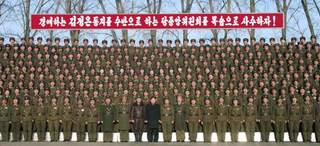
Los líderes de más de 50 países comienzan este lunes en Seúl una cumbre dirigida a asegurar los materiales atómicos y prevenir la amenaza del terrorismo nuclear, en una cita ensombrecida por el programa atómico de Corea del Norte.
En la capital surcoreana se encuentran ya buena parte de los líderes que participarán en la reunión, entre ellos el presidente de EE UU, Barack Obama, que mantendrá encuentros bilaterales con el jefe del Estado chino, Hu Jintao, y el presidente saliente ruso, Dmitri Medvédev.
Con ellos abordará, antes del inicio de la cumbre, la tensión con Pyongyang tras su anuncio de que lanzará un satélite de observación en abril, lo que muchos consideran una prueba encubierta para el desarrollo de misiles balísticos.El programa nuclear de Corea del Norte no está incluido en la agenda de la reunión
La cuestión norcoreana dominó este domingo el encuentro que mantuvieron Obama y el presidente surcoreano y anfitrión de la cumbre, Lee Myung-bak, que indicaron que los planes de Pyongyang son una violación de sus propios compromisos y le instaron a desistir del lanzamiento.
Aunque presente en las bilaterales al margen de la cumbre, el programa nuclear de Corea del Norte no está incluido en la agenda de la reunión, que busca aumentar la conciencia de seguridad nuclear y asegurar materiales como el uranio altamente enriquecido y el plutonio para evitar que caigan en manos de grupos hostiles.
La cumbre de Seúl toma el testigo de la celebrada en Washington en 2010, en la que los líderes se comprometieron a proteger el material nuclear "vulnerable" en cuatro años y reforzar los mecanismos de cooperación existentes.
Corea de Norte
Barack Obama, instó este lunes a los líderes norcoreanos a que tengan "la valentía de buscar la paz" y dar una nueva vida a los ciudadanos de Corea del Norte, renunciando al desarrollo de armamento nuclear.
En un discurso en la Universidad Hankuk de Seúl, el presidente estadounidense aludió a la amenaza norcoreana de lanzar un satélite de observación sobre un misil de largo alcance e insistió en que "no habrá recompensas para las provocaciones".
Estados Unidos "no tiene intenciones hostiles hacia su país. Estamos comprometidos con la paz, y estamos dispuestos a dar pasos para mejorar las relaciones", insistió el presidente estadounidense, en un mensaje directo a las autoridades norcoreanas.
Según indicó, "sus provocaciones y su búsqueda de armamento nuclear no han logrado la seguridad que ustedes buscan, la han perjudicado".
Rusia-EEUU
El presidente de EEUU, Barack Obama, afirmó este lunes que EEUU aún puede "proseguir nuevas reducciones" de armas nucleares y anunció que buscará conversaciones con Rusia para extender esos recortes también a armamento táctico.
En su discurso acerca de su propuesta para lograr en el futuro un mundo sin armas nucleares, Obama declaró que "podemos mantener nuestro poder de disuasión y al mismo tiempo continuar mayores reducciones" de armamento nuclear.
Irán
Obama, subrayará también la "urgencia" de que Irán aproveche la oportunidad de solucionar la disputa en torno a su programa nuclear por la vía diplomática, afirmó un alto funcionario estadounidense.
Para Obama es urgente que "Irán aproveche esta oportunidad de lograr una solución diplomática sobre su programa nuclear en las conversaciones con el grupo 5+1".
El presidente abordará también en su discurso su compromiso con un nuevo marco de cooperación en el área de la energía nuclear civil que permita que los países puedan conseguir la energía atómica necesaria sin necesidad de "desarrollar un ciclo de combustible que produzca más material nuclear eternamente", indicó el alto funcionario.
Japón
Por otro lado, Japón detuvo este domingo su penúltimo reactor nuclear activo tras la crisis de Fukushima. TEPCO, operadora de la central nuclear de Kashiwazaki-Kariwa, detuvo por una revisión rutinaria el reactor 6 de la planta, con lo que Japón cuenta con tan solo una unidad activa de las 54 que tiene el país tras la crisis en Fukushima.
Desde que el devastador tsunami de marzo provocara la peor crisis nuclear desde Chernóbil, "Tokyo Electric Power", TEPCO, operadora también de la maltrecha central de Fukushima Daiichi, ha suspendido la totalidad de sus 17 reactores atómicos por primera vez desde 2003, informó la agencia local de noticias Kyodo.
TEPCO, principal empresa de abastecimiento eléctrico de la zona metropolitana de Tokio, con unos 30 millones de habitantes, obtenía cerca del 30 por ciento de la energía de sus plantas nucleares, lo que le ha obligado a retomar la actividad de sus centrales térmicas y solicitar a empresas y particulares medidas de recorte energético.
El cierre paulatino de los reactores en Japón, un país que antes de la crisis de Fukushima dependía en cerca de un 30 por ciento de la energía nuclear, ha aumentado las preocupaciones por el suministro energético en el país, sobre todo de cara al caluroso verano cuando se espera que la demanda alcance su tope.
2012-03-25T23:00:59Z
Hugo Chávez comienza la radioterapia en Cuba en vísperas de la visita del Papa
Hugo Chávez comienza la radioterapia en Cuba en vísperas de la visita del Papa
EFE
Chávez recibió este sabado la primera sesión de radioterapia de las cinco a las que someterá en los próximos días en la isla.
La estancia de Chávez en Cuba durante la visita papal invita a algunos a pensar en la hipótesis de que el pontífice vea al presidente venezolano.
El presidente de Venezuela, Hugo Chávez, se encuentra de nuevo en La Habana donde ya ha iniciado su tratamiento de radioterapia, en un momento en que la isla se prepara para recibir, este lunes, la visita del papa Benedicto XVI.Sobre la pasada medianoche, Hugo Chávez llegó al aeropuerto de La Habana donde fue recibido por su homólogo y aliado, Raúl Castro, con "un cálido abrazo de bienvenida", según destacó este domingo la prensa cubana.Ha transcurrido poco más de una semana desde la última estancia de Chávez en Cuba, donde pasó 21 días (del 24 de febrero al 16 de marzo) por una nueva operación en la que se le extrajo un tumor maligno de dos centímetros, recurrencia del cáncer del que fue intervenido también en la isla en junio de 2011.En una llamada telefónica a la televisión estatal venezolana, Chávez explicó este sabado recibió la primera sesión de radioterapia de las cinco a las que someterá en los próximos días en la isla. El mandatario añadió que el jueves regresará a Caracas."Debo estar en Venezuela, dios mediante, el jueves 29 (...) y luego de dos días, más bien tres días, jueves, viernes y sábado, regresaré (a Cuba) para cinco sesiones más", dijo.La gira del Papa pasa por CubaEn esta ocasión, la llegada del mandatario venezolano a La Habana se produce cuando la isla está enfrascada en el recibimiento al papa Benedicto XVI, quien cursa su segunda visita a Latinoamérica con una gira por México y Cuba.Tras su paso por tierras mexicanas, el pontífice iniciará mañana lunes su visita a Cuba en la ciudad oriental de Santiago, donde será recibido por el presidente Raúl Castro y donde oficiará su primera misa al aire libre en la isla.El martes 27 Benedicto XVI visitará el Santuario de la Virgen del Cobre, patrona de la isla, y volará a La Habana donde concluirá su viaje el miércoles 28 tras una misa en la emblemática Plaza de la Revolución que se prevé multitudinaria.La estancia de Hugo Chávez en Cuba durante la visita papal invita a algunos a pensar en la hipótesis de que el pontífice vea al presidente venezolano en La Habana."Se comenta que Chávez, Fidel, Raúl Castro y Benedicto XVI pudieran encontrarse en La Habana", escribió este domingo en la red social Twitter un bloguero oficialista cubano conocido como Yohandry.Al respecto, desde León, en México, el portavoz del Vaticano, Federico Lombardi, dijo a periodistas: "no sabía nada sobre ello (el viaje de Chávez), pero no creo que haya una posibilidad concreta de que se encuentren, me sorprendería mucho"."Hasta el momento no hemos recibido ninguna petición de audiencia, aunque todo puede cambiar. Esto es nuevo (la presencia de Chávez en Cuba coincidiendo con el viaje papal) y no estaba en el programa. Sólo puedo insistir en que, hasta el momento, no tenemos noticias sobre esa eventual solicitud de encuentro con el papa", afirmó Lombardi.Candidato a pesar del cáncerHugo Chávez fue operado el 10 de junio de 2011 de un absceso pélvico en La Habana, en la parte final de una gira por Brasil, Ecuador y Cuba, y posteriormente se le detectó un cáncer en la misma zona del que fue operado el día de ese mes. Después, ha vuelto a la isla en otras seis ocasiones (incluida esta) para recibir quimioterapia o someterse a revisiones médicas.Durante las estancias de Chávez en Cuba, las autoridades de la isla han mantenido un absoluto hermetismo en torno a su estado de salud y es el mismo presidente venezolano o miembros de su Gobierno quienes informan a través de medios venezolanos sobre su situación o o los tratamientos que recibe.Chávez, quien ha negado que tenga metástasis, aspirará en los comicios presidenciales del próximo 7 de octubre a su tercera reelección frente al candidato de la oposición, Henrique Capriles.Venezuela es el principal aliado político y el mayor socio comercial de Cuba, y el intercambio bilateral pasó de 200 millones de dólares en 2005 a más de 6.000 millones en 2010, un volumen comercial que supone casi el 40 por ciento del total de la isla.Venezuela provee a Cuba de 100.000 barriles de crudo diarios que La Habana paga en parte con servicios médicos, educativos y deportivos.
EFE
- Chávez recibió este sabado la primera sesión de radioterapia de las cinco a las que someterá en los próximos días en la isla.
- La estancia de Chávez en Cuba durante la visita papal invita a algunos a pensar en la hipótesis de que el pontífice vea al presidente venezolano.
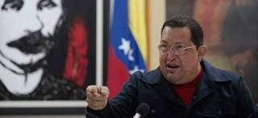
El presidente de Venezuela, Hugo Chávez, se encuentra de nuevo en La Habana donde ya ha iniciado su tratamiento de radioterapia, en un momento en que la isla se prepara para recibir, este lunes, la visita del papa Benedicto XVI.
Sobre la pasada medianoche, Hugo Chávez llegó al aeropuerto de La Habana donde fue recibido por su homólogo y aliado, Raúl Castro, con "un cálido abrazo de bienvenida", según destacó este domingo la prensa cubana.
Ha transcurrido poco más de una semana desde la última estancia de Chávez en Cuba, donde pasó 21 días (del 24 de febrero al 16 de marzo) por una nueva operación en la que se le extrajo un tumor maligno de dos centímetros, recurrencia del cáncer del que fue intervenido también en la isla en junio de 2011.
En una llamada telefónica a la televisión estatal venezolana, Chávez explicó este sabado recibió la primera sesión de radioterapia de las cinco a las que someterá en los próximos días en la isla. El mandatario añadió que el jueves regresará a Caracas.
"Debo estar en Venezuela, dios mediante, el jueves 29 (...) y luego de dos días, más bien tres días, jueves, viernes y sábado, regresaré (a Cuba) para cinco sesiones más", dijo.
La gira del Papa pasa por Cuba
En esta ocasión, la llegada del mandatario venezolano a La Habana se produce cuando la isla está enfrascada en el recibimiento al papa Benedicto XVI, quien cursa su segunda visita a Latinoamérica con una gira por México y Cuba.
Tras su paso por tierras mexicanas, el pontífice iniciará mañana lunes su visita a Cuba en la ciudad oriental de Santiago, donde será recibido por el presidente Raúl Castro y donde oficiará su primera misa al aire libre en la isla.
El martes 27 Benedicto XVI visitará el Santuario de la Virgen del Cobre, patrona de la isla, y volará a La Habana donde concluirá su viaje el miércoles 28 tras una misa en la emblemática Plaza de la Revolución que se prevé multitudinaria.
La estancia de Hugo Chávez en Cuba durante la visita papal invita a algunos a pensar en la hipótesis de que el pontífice vea al presidente venezolano en La Habana.
"Se comenta que Chávez, Fidel, Raúl Castro y Benedicto XVI pudieran encontrarse en La Habana", escribió este domingo en la red social Twitter un bloguero oficialista cubano conocido como Yohandry.
Al respecto, desde León, en México, el portavoz del Vaticano, Federico Lombardi, dijo a periodistas: "no sabía nada sobre ello (el viaje de Chávez), pero no creo que haya una posibilidad concreta de que se encuentren, me sorprendería mucho".
"Hasta el momento no hemos recibido ninguna petición de audiencia, aunque todo puede cambiar. Esto es nuevo (la presencia de Chávez en Cuba coincidiendo con el viaje papal) y no estaba en el programa. Sólo puedo insistir en que, hasta el momento, no tenemos noticias sobre esa eventual solicitud de encuentro con el papa", afirmó Lombardi.
Candidato a pesar del cáncer
Hugo Chávez fue operado el 10 de junio de 2011 de un absceso pélvico en La Habana, en la parte final de una gira por Brasil, Ecuador y Cuba, y posteriormente se le detectó un cáncer en la misma zona del que fue operado el día de ese mes. Después, ha vuelto a la isla en otras seis ocasiones (incluida esta) para recibir quimioterapia o someterse a revisiones médicas.
Durante las estancias de Chávez en Cuba, las autoridades de la isla han mantenido un absoluto hermetismo en torno a su estado de salud y es el mismo presidente venezolano o miembros de su Gobierno quienes informan a través de medios venezolanos sobre su situación o o los tratamientos que recibe.
Chávez, quien ha negado que tenga metástasis, aspirará en los comicios presidenciales del próximo 7 de octubre a su tercera reelección frente al candidato de la oposición, Henrique Capriles.
Venezuela es el principal aliado político y el mayor socio comercial de Cuba, y el intercambio bilateral pasó de 200 millones de dólares en 2005 a más de 6.000 millones en 2010, un volumen comercial que supone casi el 40 por ciento del total de la isla.
Venezuela provee a Cuba de 100.000 barriles de crudo diarios que La Habana paga en parte con servicios médicos, educativos y deportivos.
2012-03-25T20:26:40Z
El primer ministro luso quiere blindar las reglas de déficit fijadas por la Unión Europea
El primer ministro luso quiere blindar las reglas de déficit fijadas por la Unión Europea
EFE
El primer ministro de Portugal quiere que la deuda pública se mantenga "significativamente por debajo" del 60 % del PIB.
Passos Coelho pretende darle rango constitucional a la actual ley presupuestaria.
Los conservadores necesitarían el apoyo de los 74 diputados socialistas para obtener una mayoría de dos tercios.
El primer ministro portugués, Pedro Passos Coelho, ha dicho este domingo que el Gobierno propondrá que el límite al déficit acordado con la UE el pasado diciembre "tenga fuerza constitucional" para que no pueda ser alterado "de cualquier manera".Passos Coelho, que ha clausurado el XXXIV congreso del Partido Social Demócrata (PSD) que preside, ha expuesto que la idea es convertir la actual ley de contexto presupuestario en una ley "con fuerza constitucional".De este modo, el jefe de Gobierno luso pretende que se blinde lo acordado en el Tratado Intergubernamental europeo, que fija que el déficit estructural no supere 0,5 % del PIB nominal entre los países firmantes y que su deuda pública esté "significativamente por debajo" del 60 % del PIB de Portugal.No obstante, para cualquier cambio constitucional, los conservadores necesitarían el apoyo de los socialistas, el principal partido de la oposición, pues sus 74 diputados son fundamentales para obtener una mayoría de dos tercios de la Asamblea de la República. El pasado diciembre, su líder, Antonio José Seguro, ya se opuso a una posible modificación de la Carta Magna
EFE
- El primer ministro de Portugal quiere que la deuda pública se mantenga "significativamente por debajo" del 60 % del PIB.
- Passos Coelho pretende darle rango constitucional a la actual ley presupuestaria.
- Los conservadores necesitarían el apoyo de los 74 diputados socialistas para obtener una mayoría de dos tercios.
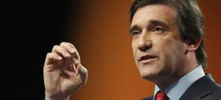
El primer ministro portugués, Pedro Passos Coelho, ha dicho este domingo que el Gobierno propondrá que el límite al déficit acordado con la UE el pasado diciembre "tenga fuerza constitucional" para que no pueda ser alterado "de cualquier manera".
Passos Coelho, que ha clausurado el XXXIV congreso del Partido Social Demócrata (PSD) que preside, ha expuesto que la idea es convertir la actual ley de contexto presupuestario en una ley "con fuerza constitucional".
De este modo, el jefe de Gobierno luso pretende que se blinde lo acordado en el Tratado Intergubernamental europeo, que fija que el déficit estructural no supere 0,5 % del PIB nominal entre los países firmantes y que su deuda pública esté "significativamente por debajo" del 60 % del PIB de Portugal.
No obstante, para cualquier cambio constitucional, los conservadores necesitarían el apoyo de los socialistas, el principal partido de la oposición, pues sus 74 diputados son fundamentales para obtener una mayoría de dos tercios de la Asamblea de la República. El pasado diciembre, su líder, Antonio José Seguro, ya se opuso a una posible modificación de la Carta Magna
2012-03-25T17:12:42Z
Margaret Thatcher: "Si pudiera volver atrás, no me metería en política"
Margaret Thatcher: "Si pudiera volver atrás, no me metería en política"
EFE
Es la confesión de la ex primera ministra británica a un diputado tory en 1995.
Una serie de diarios redactados por ese exsecretario de Estado conservador han sido aglutinados en un libro: 'The Spicer Diaries'.
El mencionado libro habla de los años en los que Thatcher estuvo en el poder.
La ex primera ministra británica, la conservadora Margaret Thatcher, reconoció a un diputado tory que si pudiera volver atrás, no elegiría dedicarse a la política, según recoge este domingo The Sunday Telegraph.Así lo asegura un nuevo libro The Spicer Diaries que reúne una serie de diarios redactados por Lord (Michael) Spicer, exsecretario de Estado conservador que dejó el Parlamento en 2010, y que a partir de este domingo el citado rotativo comienza a publicar por capítulos. Según Lord Spicer, la exjefa del Ejecutivo, que se mantuvo al frente del Gobierno entre 1979 y 1990, le confesó en abril de 1995 que "si pudiera volver atrás" no se metería en política "por cómo afecta a tu familia".Al parecer, Thatcher, a quien los medios apodaron en su día la 'Dama de Hierro' y que en la actualidad padece demencia senil, hizo esta revelación durante un encuentro con Lord Spicer en el que también estaba presente su marido, Sir Denis, en la oficina que la exlíder tory tenía en el barrio londinense de Chelsea.El mencionado libro habla de los años en los que Thatcher, la primera mujer en llegar a ser líder del Partido conservador y en entrar en Downing Street como primera ministra, estuvo en el poder e incluye la visión del autor sobre diferentes etapas y momentos, como el conflicto por las Malvinas o la salida de Thatcher del Gobierno en 1990.Según Spicer, la 'Dama de Hierro' "se desilusionó tras dejar su puesto como primera ministra en noviembre de 1990".El autor recuerda cómo la propia Thatcher le admitió en febrero de 1991, en la Cámara de los Comunes, que tras dejar su cargo como primera ministra "odiaba ahora venir a este lugar".
EFE
- Es la confesión de la ex primera ministra británica a un diputado tory en 1995.
- Una serie de diarios redactados por ese exsecretario de Estado conservador han sido aglutinados en un libro: 'The Spicer Diaries'.
- El mencionado libro habla de los años en los que Thatcher estuvo en el poder.
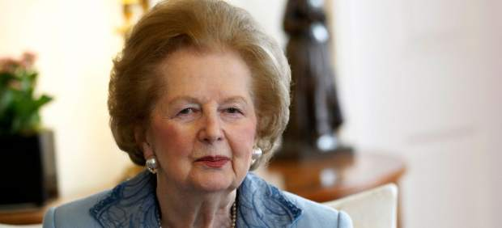
La ex primera ministra británica, la conservadora Margaret Thatcher, reconoció a un diputado tory que si pudiera volver atrás, no elegiría dedicarse a la política, según recoge este domingo The Sunday Telegraph.
Así lo asegura un nuevo libro The Spicer Diaries que reúne una serie de diarios redactados por Lord (Michael) Spicer, exsecretario de Estado conservador que dejó el Parlamento en 2010, y que a partir de este domingo el citado rotativo comienza a publicar por capítulos.
Según Lord Spicer, la exjefa del Ejecutivo, que se mantuvo al frente del Gobierno entre 1979 y 1990, le confesó en abril de 1995 que "si pudiera volver atrás" no se metería en política "por cómo afecta a tu familia".
Al parecer, Thatcher, a quien los medios apodaron en su día la 'Dama de Hierro' y que en la actualidad padece demencia senil, hizo esta revelación durante un encuentro con Lord Spicer en el que también estaba presente su marido, Sir Denis, en la oficina que la exlíder tory tenía en el barrio londinense de Chelsea.
El mencionado libro habla de los años en los que Thatcher, la primera mujer en llegar a ser líder del Partido conservador y en entrar en Downing Street como primera ministra, estuvo en el poder e incluye la visión del autor sobre diferentes etapas y momentos, como el conflicto por las Malvinas o la salida de Thatcher del Gobierno en 1990.
Según Spicer, la 'Dama de Hierro' "se desilusionó tras dejar su puesto como primera ministra en noviembre de 1990".
El autor recuerda cómo la propia Thatcher le admitió en febrero de 1991, en la Cámara de los Comunes, que tras dejar su cargo como primera ministra "odiaba ahora venir a este lugar".
2012-03-25T16:06:32Z
Iberia Express inició su andadura este domingo con un vuelo Madrid - Alicante
Iberia Express inició su andadura este domingo con un vuelo Madrid - Alicante
EFE
La filial de bajo coste de Iberia realiza rutas a Alicante, Palma de Mallorca, Sevilla y Málaga, aunque prevé aumentar los destinos en verano.
Según las previsiones de la compañía, tiene previsto transportar a 2,5 millones de pasajeros durante este 2012.
La filial de bajo coste comienza a operar con cuatro aviones Airbus A320.
Un vuelo a Alicante, que despegó este domingo a las 7.35 horas, ha iniciado la andadura de la nueva compañía de bajo coste Iberia Express en el aeropuerto de Barajas. Además, la aerolínea tiene programadas para esta jornadaunas 25 operaciones.Según han informado fuentes de Aena, el primer vuelo, operado con un Airbus 320, se ha dirigido a Alicante, mientras que el último que despegue de Madrid, a las 23.25 horas, volará a Málaga. En un su inicio de operaciones, Iberia Express, la filial de bajo coste de Iberia, tiene previsto realizar rutas a Alicante, Palma de Mallorca, Sevilla y Málaga, aunque en verano prevé aumentar sus operaciones a 17 destinos de corto y medio radio.Según las previsiones de la aerolínea, durante 2012 Iberia Express tiene previsto transportar 2,5 millones de pasajeros.La filial de bajo coste comienza a operar con cuatro aviones Airbus A320, a los que se van a unir progresivamente otros 10 hasta finales de año.Según fuentes de Iberia, a la que la nueva aerolínea pertenece en un 100%, la compañía nace con un capital social de 20 millones de euros y los trabajadores cobrarán desde los 6.000 euros netos mensuales de los comandantes, hasta los 1.250 euros de los tripulantes de cabina, pasando por los 2.700 de los copilotos y los 1.370 de los sobrecargos.La creación de esta nueva compañía ha generado movilizaciones entre varios colectivos de los trabajadores, principalmente el sindicato de pilotos Sepla, que convocó 12 jornadas de huelga en contra de su puesta en marcha "fuera de la matriz", ya que lo considera ilegal, al vulnerar su convenio colectivo.Fuentes de los cuatro sindicatos que se oponen a la creación de esta nueva aerolínea, Sepla, Stavla, CNT Y CTA, advirtieron de que volverán a movilizarse si no funciona la mediación del exministro de trabajo Manuel Pimentel entre el Gobierno, la compañía y el sindicato de pilotos.
EFE
- La filial de bajo coste de Iberia realiza rutas a Alicante, Palma de Mallorca, Sevilla y Málaga, aunque prevé aumentar los destinos en verano.
- Según las previsiones de la compañía, tiene previsto transportar a 2,5 millones de pasajeros durante este 2012.
- La filial de bajo coste comienza a operar con cuatro aviones Airbus A320.
Un vuelo a Alicante, que despegó este domingo a las 7.35 horas, ha iniciado la andadura de la nueva compañía de bajo coste Iberia Express en el aeropuerto de Barajas. Además, la aerolínea tiene programadas para esta jornadaunas 25 operaciones.
Según han informado fuentes de Aena, el primer vuelo, operado con un Airbus 320, se ha dirigido a Alicante, mientras que el último que despegue de Madrid, a las 23.25 horas, volará a Málaga.
En un su inicio de operaciones, Iberia Express, la filial de bajo coste de Iberia, tiene previsto realizar rutas a Alicante, Palma de Mallorca, Sevilla y Málaga, aunque en verano prevé aumentar sus operaciones a 17 destinos de corto y medio radio.
Según las previsiones de la aerolínea, durante 2012 Iberia Express tiene previsto transportar 2,5 millones de pasajeros.
La filial de bajo coste comienza a operar con cuatro aviones Airbus A320, a los que se van a unir progresivamente otros 10 hasta finales de año.
Según fuentes de Iberia, a la que la nueva aerolínea pertenece en un 100%, la compañía nace con un capital social de 20 millones de euros y los trabajadores cobrarán desde los 6.000 euros netos mensuales de los comandantes, hasta los 1.250 euros de los tripulantes de cabina, pasando por los 2.700 de los copilotos y los 1.370 de los sobrecargos.
La creación de esta nueva compañía ha generado movilizaciones entre varios colectivos de los trabajadores, principalmente el sindicato de pilotos Sepla, que convocó 12 jornadas de huelga en contra de su puesta en marcha "fuera de la matriz", ya que lo considera ilegal, al vulnerar su convenio colectivo.
Fuentes de los cuatro sindicatos que se oponen a la creación de esta nueva aerolínea, Sepla, Stavla, CNT Y CTA, advirtieron de que volverán a movilizarse si no funciona la mediación del exministro de trabajo Manuel Pimentel entre el Gobierno, la compañía y el sindicato de pilotos.
2012-03-27T08:35:01Z
La Cumbre de Seúl insta a minimizar el uso de uranio enriquecido para 2013
La Cumbre de Seúl insta a minimizar el uso de uranio enriquecido para 2013
EFE
Una declaración de 13 puntos, firmada por 53 países, insta a potenciar la seguridad a la hora de manejar y transportar los materiales nucleares.
Se insta a prevenir que la tecnología nuclear caiga en manos de grupos hostiles.
Obama invita a Rajoy a la Casa Blanca tras su primer encuentro en Seúl.
Rajoy asegura a la ONU que España sigue comprometida con la Alianza de Civilizaciones.
Los líderes de 53 países reunidos en la Cumbre de Seguridad Nuclear de Seúl han llamado a minimizar el uso del uranio altamente enriquecido para finales de 2013, y a tomar medidas para que su manejo sea seguro.En un comunicado emitido al término del encuentro, los dirigentes instaron además a la adhesión a los instrumentos multilaterales relacionados con seguridad nuclear y subrayaron el "papel central" del Organismo Internacional de la Energía Atómica (OIEA) en este terreno.La declaración, de trece puntos, destaca además la relación entre la seguridad en las plantas atómicas y la prevención de delitos nucleares y plasma el compromiso de los 53 países de potenciar la seguridad a la hora de transportar materiales nucleares y radiactivos y combatir su tráfico ilegal.En línea con la primera Cumbre de Seguridad Nuclear, celebrada en Washington en 2010, los líderes señalaron que el terrorismo nuclear sigue siendo una de las amenazas que plantean un mayor desafío para la seguridad internacional.Subrayaron que es una "responsabilidad fundamental de los Estados" mantener la seguridad efectiva de todo su material nuclear, así como de las instalaciones atómicas bajo su control, y prevenir que los materiales, la información o la tecnología nuclear caiga en manos de grupos hostiles.Con este objetivo, instaron a crear una "arquitectura de seguridad nuclear global" con la adhesión del mayor número posible de países a los acuerdos y convenciones internacionales vinculados a la protección del material atómico.Precauciones especialesTambién destacaron que el uranio altamente enriquecido y el plutonio, materiales que permiten fabricar armas atómicas, requieren "precauciones especiales", por lo que instaron a los Estados a retirarlos de forma "segura" de las instalaciones que ya no los utilicen.En este sentido, llamaron a promover el uso de uranio de bajo enriquecimiento en lugar del isótopo de mayor grado, lo que conllevaría reconvertir "en los casos que sea técnica y económicamente viable" los reactores que utilizan el tipo más peligroso de uranio.Por otra parte, los líderes recalcaron la importancia de garantizar la protección de los materiales vulnerables durante su transporte y de combatir su tráfico ilegal.El Comunicado de Seúl, que este martes cerró la II Cumbre de Seguridad Nuclear celebrada en la capital surcoreana, también puso fecha y lugar a la próxima edición del evento, que tendrá lugar en 2014 en Holanda.
EFE
- Una declaración de 13 puntos, firmada por 53 países, insta a potenciar la seguridad a la hora de manejar y transportar los materiales nucleares.
- Se insta a prevenir que la tecnología nuclear caiga en manos de grupos hostiles.
- Obama invita a Rajoy a la Casa Blanca tras su primer encuentro en Seúl.
- Rajoy asegura a la ONU que España sigue comprometida con la Alianza de Civilizaciones.
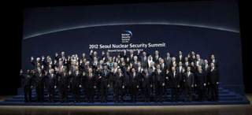
Los líderes de 53 países reunidos en la Cumbre de Seguridad Nuclear de Seúl han llamado a minimizar el uso del uranio altamente enriquecido para finales de 2013, y a tomar medidas para que su manejo sea seguro.
En un comunicado emitido al término del encuentro, los dirigentes instaron además a la adhesión a los instrumentos multilaterales relacionados con seguridad nuclear y subrayaron el "papel central" del Organismo Internacional de la Energía Atómica (OIEA) en este terreno.
La declaración, de trece puntos, destaca además la relación entre la seguridad en las plantas atómicas y la prevención de delitos nucleares y plasma el compromiso de los 53 países de potenciar la seguridad a la hora de transportar materiales nucleares y radiactivos y combatir su tráfico ilegal.
En línea con la primera Cumbre de Seguridad Nuclear, celebrada en Washington en 2010, los líderes señalaron que el terrorismo nuclear sigue siendo una de las amenazas que plantean un mayor desafío para la seguridad internacional.
Subrayaron que es una "responsabilidad fundamental de los Estados" mantener la seguridad efectiva de todo su material nuclear, así como de las instalaciones atómicas bajo su control, y prevenir que los materiales, la información o la tecnología nuclear caiga en manos de grupos hostiles.
Con este objetivo, instaron a crear una "arquitectura de seguridad nuclear global" con la adhesión del mayor número posible de países a los acuerdos y convenciones internacionales vinculados a la protección del material atómico.
Precauciones especiales
También destacaron que el uranio altamente enriquecido y el plutonio, materiales que permiten fabricar armas atómicas, requieren "precauciones especiales", por lo que instaron a los Estados a retirarlos de forma "segura" de las instalaciones que ya no los utilicen.
En este sentido, llamaron a promover el uso de uranio de bajo enriquecimiento en lugar del isótopo de mayor grado, lo que conllevaría reconvertir "en los casos que sea técnica y económicamente viable" los reactores que utilizan el tipo más peligroso de uranio.
Por otra parte, los líderes recalcaron la importancia de garantizar la protección de los materiales vulnerables durante su transporte y de combatir su tráfico ilegal.
El Comunicado de Seúl, que este martes cerró la II Cumbre de Seguridad Nuclear celebrada en la capital surcoreana, también puso fecha y lugar a la próxima edición del evento, que tendrá lugar en 2014 en Holanda.
2012-03-27T01:31:23Z
Crecen las protestas cuando se cumple un mes de la muerte de Trayvon Martin
Crecen las protestas cuando se cumple un mes de la muerte de Trayvon Martin
EFE
Fue expulsado de la escuela por poseer restos de marihuana.
Cientos de personas se concentraron este lunes en la localidad donde murió.
El vigilante voluntario que mató al adolescente "teme por su vida".
Este afirma que fue atacado por Trayvon antes de dispararlo.
La muerte de Trayvon Martin cumplió un mes este lunes, cuando las protestas, las acusaciones de tinte racial y las peticiones de justicia por este caso son más intensas que nunca.Por un lado, este lunes se ha sabido que el adolescente fue expulsado durante 10 días de la escuela por tener una bolsa de plástico con restos de marihuana.Según el abogado de la familia, ese hecho no guarda relación alguna con su muerte a manos de un vigilante voluntario en Florida.Benjamin Crump, que representa a los familiares del menor afroamericano, aclaró a la prensa que el adolescente no fue detenido por el incidente y recordó que, según el Departamento de Justicia Juvenil, Martin no tiene antecedentes penales.Por otro lado, George Zimmerman, el hombre que disparó contra Martin, asegura que el joven le golpeó en la nariz y se hizo un corte en la cabeza antes de disparar contra el menor, según sus allegados.Ante estos hechos la madre de Trayvon ha lamentado que tras matar a su hijo, ahora se quiera "matar su reputación".Martin perdió la vida el pasado 26 de febrero al recibir un disparo de un vigilante cuando se encontraba desarmado en la urbanización en Sanford (Florida), donde vivía su padre y donde pasaba los días de la expulsión.Pese a que inicialmente el suceso no atrajo excesiva atención, en los últimos días la movilización ciudadana y las protestas, especialmente por parte de la comunidad negra, en todo el país han tomado tal fuerza que tanto el jefe de Policía de Sanford como el fiscal estatal se han visto forzados a retirarse del caso.El vigilante, estadounidense-peruano, de 28 años, está en libertad amparado por la ley Stand Your Ground ("Defiende tu posición"), que concede a las personas la libertad de recurrir al uso de la fuerza para defenderse.A estas alturas casi tres de cada cuatro estadounidenses creen que la policía debería arrestar al vigilante voluntario, según una encuesta de ORC International difundida por CNN.Mientras que el 64 % de los hombres de este país respalda la norma, sólo el 46 % de las mujeres la apoya. También están a favor de ella el 59 % de los blancos y el 44 % del resto.Crecen las protestasSu mantenimiento en libertad ha desatado protestas de la ciudadanía estadounidense, especialmente de la comunidad afroamericana de Estados Unidos.Con motivo del cumplimiento de un mes de la muerte de Trayvon, cientos de personas se concentraron ante el Ayuntamiento de Sanford (Florida), la localidad de las afueras de Orlando donde ocurrieron los hechos.Al igual que miles de personas más por todo el país, reclamaron que se detenga al atacante, George Zimmerman, que permanece en libertad sin cargos protegido por la legislación vigente en Florida en materia de defensa propia."No estamos pidiendo ojo por ojo. Estamos pidiendo justicia, justicia", reclamó Tracy Martin, padre del adolescente fallecido, al tiempo que el conocido reverendo y activista afroamericano Al Sharpton, que también participó en la protesta de Sanford, insistió en la vertiente racial de este incidente.En ese sentido, advirtió a las autoridades de Sanford que, si no hacen algo, "corren el riesgo de convertirse en la Birmingham y Selma del siglo XXI", en referencia a esas ciudades del sur de EEUU que se transformaron en símbolos del racismo durante las manifestaciones por los derechos civiles en los 60."Está nervioso y teme por su vida"Simultáneamente este lunes se difundieron por primera vez algunos detalles sobre la versión de Zimmerman, que permanece recluido por temor a represalias y hasta el momento no ha hecho declaraciones públicas.Ante la generalizada condena pública de Zimmerman, varios allegados a este hombre han decidido salir en su defensa. Entre ellos, Greg Sonner, un amigo y asesor legal del vigilante, que explicó hoy en una entrevista televisada que éste está atravesando un momento muy duro y que se arrepiente terriblemente de lo ocurrido."Sus amigos hemos querido dar un paso adelante porque las acusaciones de que es racista simplemente no son ciertas. Está nervioso y teme por su vida. Ha sido acusado en todo EEUU", dijo Sonner.Según han denunciado, el hombre ha recibido varias amenazas de muerte, al tiempo que el grupo Nuevas Panteras Negras ha ofrecido 10.000 dólares por información que conduzca a su captura.
EFE
- Fue expulsado de la escuela por poseer restos de marihuana.
- Cientos de personas se concentraron este lunes en la localidad donde murió.
- El vigilante voluntario que mató al adolescente "teme por su vida".
- Este afirma que fue atacado por Trayvon antes de dispararlo.
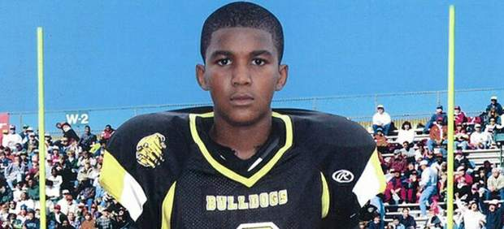
La muerte de Trayvon Martin cumplió un mes este lunes, cuando las protestas, las acusaciones de tinte racial y las peticiones de justicia por este caso son más intensas que nunca.
Por un lado, este lunes se ha sabido que el adolescente fue expulsado durante 10 días de la escuela por tener una bolsa de plástico con restos de marihuana.
Según el abogado de la familia, ese hecho no guarda relación alguna con su muerte a manos de un vigilante voluntario en Florida.
Benjamin Crump, que representa a los familiares del menor afroamericano, aclaró a la prensa que el adolescente no fue detenido por el incidente y recordó que, según el Departamento de Justicia Juvenil, Martin no tiene antecedentes penales.
Por otro lado, George Zimmerman, el hombre que disparó contra Martin, asegura que el joven le golpeó en la nariz y se hizo un corte en la cabeza antes de disparar contra el menor, según sus allegados.
Ante estos hechos la madre de Trayvon ha lamentado que tras matar a su hijo, ahora se quiera "matar su reputación".
Martin perdió la vida el pasado 26 de febrero al recibir un disparo de un vigilante cuando se encontraba desarmado en la urbanización en Sanford (Florida), donde vivía su padre y donde pasaba los días de la expulsión.
Pese a que inicialmente el suceso no atrajo excesiva atención, en los últimos días la movilización ciudadana y las protestas, especialmente por parte de la comunidad negra, en todo el país han tomado tal fuerza que tanto el jefe de Policía de Sanford como el fiscal estatal se han visto forzados a retirarse del caso.
El vigilante, estadounidense-peruano, de 28 años, está en libertad amparado por la ley Stand Your Ground ("Defiende tu posición"), que concede a las personas la libertad de recurrir al uso de la fuerza para defenderse.
A estas alturas casi tres de cada cuatro estadounidenses creen que la policía debería arrestar al vigilante voluntario, según una encuesta de ORC International difundida por CNN.
Mientras que el 64 % de los hombres de este país respalda la norma, sólo el 46 % de las mujeres la apoya. También están a favor de ella el 59 % de los blancos y el 44 % del resto.
Crecen las protestas
Su mantenimiento en libertad ha desatado protestas de la ciudadanía estadounidense, especialmente de la comunidad afroamericana de Estados Unidos.
Con motivo del cumplimiento de un mes de la muerte de Trayvon, cientos de personas se concentraron ante el Ayuntamiento de Sanford (Florida), la localidad de las afueras de Orlando donde ocurrieron los hechos.
Al igual que miles de personas más por todo el país, reclamaron que se detenga al atacante, George Zimmerman, que permanece en libertad sin cargos protegido por la legislación vigente en Florida en materia de defensa propia.
"No estamos pidiendo ojo por ojo. Estamos pidiendo justicia, justicia", reclamó Tracy Martin, padre del adolescente fallecido, al tiempo que el conocido reverendo y activista afroamericano Al Sharpton, que también participó en la protesta de Sanford, insistió en la vertiente racial de este incidente.
En ese sentido, advirtió a las autoridades de Sanford que, si no hacen algo, "corren el riesgo de convertirse en la Birmingham y Selma del siglo XXI", en referencia a esas ciudades del sur de EEUU que se transformaron en símbolos del racismo durante las manifestaciones por los derechos civiles en los 60.
"Está nervioso y teme por su vida"
Simultáneamente este lunes se difundieron por primera vez algunos detalles sobre la versión de Zimmerman, que permanece recluido por temor a represalias y hasta el momento no ha hecho declaraciones públicas.
Ante la generalizada condena pública de Zimmerman, varios allegados a este hombre han decidido salir en su defensa. Entre ellos, Greg Sonner, un amigo y asesor legal del vigilante, que explicó hoy en una entrevista televisada que éste está atravesando un momento muy duro y que se arrepiente terriblemente de lo ocurrido.
"Sus amigos hemos querido dar un paso adelante porque las acusaciones de que es racista simplemente no son ciertas. Está nervioso y teme por su vida. Ha sido acusado en todo EEUU", dijo Sonner.
Según han denunciado, el hombre ha recibido varias amenazas de muerte, al tiempo que el grupo Nuevas Panteras Negras ha ofrecido 10.000 dólares por información que conduzca a su captura.
2012-03-26T21:36:15Z
El exjefe del FMI, Strauss Kahn, imputado por proxenetismo en banda organizada
El exjefe del FMI, Strauss Kahn, imputado por proxenetismo en banda organizada
AGENCIAS
Fue interrogado durante cerca de ocho horas en el juzgado de la ciudad de Lille (noroeste) por tres jueces del llamado caso del Hotel Carlton de Lille.
Los magistrados evocan en la imputación de Strauss Kahn una "ayuda y asistencia" para proteger la prostitución.
Strauss-Kahn está relacionado en un caso de proxenetismo por haber participado supuestamente en varias fiestas sexuales organizadas por amigos suyos.
El exdirector gerente del Fondo Monetario Internacional (FMI) Dominique Strauss-Kahn ha sido acusado de proxenetismo en banda organizada y quedó en libertad bajo control judicial a cambio de una fianza de 100.000 euros, informaron medios franceses.Strauss-Kahn, ex ministro de Economía galo, fue interrogado durante cerca de ocho horas en el juzgado de la ciudad de Lille (noroeste) por tres jueces instructores del llamado caso del Hotel Carlton de Lille, indicaron.DSK fue imputado por su participación en diferentes correrías sexuales organizadas en Lille (Francia), Bruselas, París y Washington por empresarios amigos suyos, en las que también participó un alto cargo de la policía del noroeste del país.Su comparecencia, inicialmente prevista para el próximo miércoles, fue adelantada sin previo aviso. El diario "Le Figaro", que cita fuentes de la fiscalía, indicó que los magistrados evocan en la imputación de Strauss Kahn una "ayuda y asistencia" para proteger la prostitución.El ex director gerente del FMI siempre mantuvo, y lo ha reiterado este lunes ante los jueces, que nunca imaginó siquiera que las mujeres que participaban en aquellas juergas libertinas eran prostitutas.Eso mismo corroboraron en el curso de la instrucción casi todos los implicados en el caso, salvo algunas de las participantes femeninas, quienes estimaron imposible que el hoy imputado pudiese ignorar que sus prestaciones eran remuneradas.Sus abogados apelarán la imputaciónMientras el exdirector gerente del FMI y exministro socialista abandonaba el Palacio de Justicia en un automóvil con los vidrios tintados, su tres abogados se dirigieron a la prensa para leer una declaración en la que éste declaraba "con la mayor firmeza no ser culpable de ninguno de los hechos" que se le imputan."Strauss Kahn declara no haber tenido jamás la mínima consciencia de que pudiesen ser prostitutas las mujeres encontradas", leyó uno de sus abogados, Richard Malka. Los letrados agregaron que piensan apelar la imputación de su cliente.Al estar bajo control judicial, el acusado no podrá ponerse en contacto con los otros ocho imputados en el caso, ni con las partes civiles, así como con la prensa en todo lo relacionado a la investigación en curso, recordó Le Figaro.El último de los encuentros sexuales por los que este lunes fue imputado tuvo lugar en Washington, la víspera del 14 de mayo de 2011, cuando Strauss-Kahn fue detenido en Nueva York tras ser acusado de intento de secuestro y violación por una camarera del hotel Sofitel.DSK, siglas por las que se le conoce también en Francia al hasta hace poco menos de un año candidato favorito a las presidenciales de abril y mayo próximos, no fue acusado, en cambio, de encubrimiento de abuso de bienes sociales, cargo que durante el primer interrogatorio de que fue objeto hace un mes se dijo que podría serle imputado.La decisión de los jueces de Lille tendrá un efecto devastador para la defensa de Strauss Kahn en Nueva York, donde el próximo miércoles comienza la vista civil en su contra, por la denuncia presentada por la camarera del hotel Sofitel Nafissatou Diallo.Esa denuncia motivó la dimisión de DSK del FMI, le llevó a la cárcel durante varios días y a vivir bajo estrecho control policial durante varios meses, hasta que el fiscal encargado del caso consideró que la acusación no tenía ninguna base sólida y le dejó en libertad sin cargos.Sin embargo, algunas de las prostitutas que participaban en las fiestas sexuales dudan que Strauss-Kahn ignorara el carácter profesional de sus prestaciones. El exministro socialista fue interrogado por el papel que desempeñaron en esas fiestas varios responsables policiales del norte de Francia, lo que puede abrir otra vía de investigación.
AGENCIAS
- Fue interrogado durante cerca de ocho horas en el juzgado de la ciudad de Lille (noroeste) por tres jueces del llamado caso del Hotel Carlton de Lille.
- Los magistrados evocan en la imputación de Strauss Kahn una "ayuda y asistencia" para proteger la prostitución.
- Strauss-Kahn está relacionado en un caso de proxenetismo por haber participado supuestamente en varias fiestas sexuales organizadas por amigos suyos.
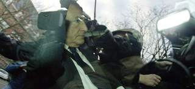
El exdirector gerente del Fondo Monetario Internacional (FMI) Dominique Strauss-Kahn ha sido acusado de proxenetismo en banda organizada y quedó en libertad bajo control judicial a cambio de una fianza de 100.000 euros, informaron medios franceses.
Strauss-Kahn, ex ministro de Economía galo, fue interrogado durante cerca de ocho horas en el juzgado de la ciudad de Lille (noroeste) por tres jueces instructores del llamado caso del Hotel Carlton de Lille, indicaron.
DSK fue imputado por su participación en diferentes correrías sexuales organizadas en Lille (Francia), Bruselas, París y Washington por empresarios amigos suyos, en las que también participó un alto cargo de la policía del noroeste del país.
Su comparecencia, inicialmente prevista para el próximo miércoles, fue adelantada sin previo aviso. El diario "Le Figaro", que cita fuentes de la fiscalía, indicó que los magistrados evocan en la imputación de Strauss Kahn una "ayuda y asistencia" para proteger la prostitución.
El ex director gerente del FMI siempre mantuvo, y lo ha reiterado este lunes ante los jueces, que nunca imaginó siquiera que las mujeres que participaban en aquellas juergas libertinas eran prostitutas.
Eso mismo corroboraron en el curso de la instrucción casi todos los implicados en el caso, salvo algunas de las participantes femeninas, quienes estimaron imposible que el hoy imputado pudiese ignorar que sus prestaciones eran remuneradas.
Sus abogados apelarán la imputación
Mientras el exdirector gerente del FMI y exministro socialista abandonaba el Palacio de Justicia en un automóvil con los vidrios tintados, su tres abogados se dirigieron a la prensa para leer una declaración en la que éste declaraba "con la mayor firmeza no ser culpable de ninguno de los hechos" que se le imputan.
"Strauss Kahn declara no haber tenido jamás la mínima consciencia de que pudiesen ser prostitutas las mujeres encontradas", leyó uno de sus abogados, Richard Malka. Los letrados agregaron que piensan apelar la imputación de su cliente.
Al estar bajo control judicial, el acusado no podrá ponerse en contacto con los otros ocho imputados en el caso, ni con las partes civiles, así como con la prensa en todo lo relacionado a la investigación en curso, recordó Le Figaro.
El último de los encuentros sexuales por los que este lunes fue imputado tuvo lugar en Washington, la víspera del 14 de mayo de 2011, cuando Strauss-Kahn fue detenido en Nueva York tras ser acusado de intento de secuestro y violación por una camarera del hotel Sofitel.
DSK, siglas por las que se le conoce también en Francia al hasta hace poco menos de un año candidato favorito a las presidenciales de abril y mayo próximos, no fue acusado, en cambio, de encubrimiento de abuso de bienes sociales, cargo que durante el primer interrogatorio de que fue objeto hace un mes se dijo que podría serle imputado.
La decisión de los jueces de Lille tendrá un efecto devastador para la defensa de Strauss Kahn en Nueva York, donde el próximo miércoles comienza la vista civil en su contra, por la denuncia presentada por la camarera del hotel Sofitel Nafissatou Diallo.
Esa denuncia motivó la dimisión de DSK del FMI, le llevó a la cárcel durante varios días y a vivir bajo estrecho control policial durante varios meses, hasta que el fiscal encargado del caso consideró que la acusación no tenía ninguna base sólida y le dejó en libertad sin cargos.
Sin embargo, algunas de las prostitutas que participaban en las fiestas sexuales dudan que Strauss-Kahn ignorara el carácter profesional de sus prestaciones. El exministro socialista fue interrogado por el papel que desempeñaron en esas fiestas varios responsables policiales del norte de Francia, lo que puede abrir otra vía de investigación.
2012-03-26T21:14:42Z
Benedicto XVI dice en Cuba que lleva en el corazón "a los presos y a sus familiares"
Benedicto XVI dice en Cuba que lleva en el corazón "a los presos y a sus familiares"
AGENCIAS
Castro destacó la estrecha relación con la Santa Sede en su bienvenida al papa.
El pontífice pide a los cubanos que construyan una sociedad "abierta y renovada".
El papa se ha referido a los presos cubanos y sus familias en su llegada a la isla.
El papa Benedicto XVI ha llegado este lunes a Cuba -isla que no pisaba desde hace catorce años- para realizar una visita apostólica hasta el miércoles, en la segunda y última parte de la gira latinoamericana que comenzó en México.En su llegada a la isla, el pontífice se refirió a los presos cubanos afirmando que lleva en su corazón "las justas aspiraciones y legítimos deseos de todos los cubanos, dondequiera que se encuentren" y de modo especial "de los jóvenes y los ancianos, de los adolescentes y los niños, de los enfermos y los trabajadores, de los presos y sus familiares, así como de los pobres y necesitados".Benedicto XVI pidió también a los cubanos que luchen por una sociedad "abierta y renovada" y les exhortó a la reconciliación en un discurso en el que dijo que Cuba "mira ya al futuro", y condenó con firmeza el capitalismo salvaje "que ha dejado al hombre desprotegido frente a ciertos poderes". Posteriormente, el pontífice se ha dirigido a los cubanos en la homilía de la misa que oficia en la plaza Antonio Maceo de Santiago de Cuba a la que asisten 200.000 cubanos venidos de toda la isla y del extranjero. En su discurso hizo un llamamiento a los matrimonios, a quienes dijo que han de ser para sus hijos "signo real y visible del amor de Cristo por la Iglesia". "Cuba tiene necesidad del testimonio de su fidelidad, de su unidad, de su capacidad de acoger la vida humana, especialmente la más indefensa y necesitada", subrayó, en velada condena al aborto.Benedicto XVI dijo también que Dios no sólo respeta la libertad humana, sino que parece necesitarla, y aseguró que Dios ha creado al hombre como fruto de su amor infinito "y por eso vivir conforme a su voluntad es el camino para encontrar nuestra genuina identidad, mientras que apartarse de Dios nos aleja de nosotros mismos y nos precipita en el vacío".El papa también tuvo palabras de aliento para la Iglesia cubana y les dijo que sabe "con cuánto esfuerzo, audacia y abnegación" trabajan cada día "para que, en las circunstancias concretas de su país, y en este tiempo de la historia", refleje cada vez más su verdadero rostro "como lugar en el que Dios se acerca y encuentra con los hombres".Las relaciones con CubaEl avión, un Boeing 777 de la compañía Alitalia, aterrizó a las 14.20 hora local (20.20 hora española) en el aeropuerto de la ciudad oriental de Santiago de Cuba, a unos 950 kilómetros al este de La Habana. A pie de pista, el presidente cubano, Raúl Castro, vestido con traje oscuro, recibió al pontífice, al que estrechó la mano con una leve inclinación.El presidente de Cuba destacó las "estrechas relaciones" entre la Santa Sede y su país en el discurso de bienvenida a Benedicto XVI, que inició este lunes una visita pastoral a la isla."Nos satisfacen las estrechas relaciones entre la Santa Sede y Cuba, que se han desarrollado sin interrupción durante setenta y seis años, siempre basadas en el respeto mutuo y en la coincidencia en asuntos vitales para la Humanidad, dijo Raúl Castro.También destacó que la constitución cubana garantiza "plena libertad religiosa" a todos los ciudadanos, en una alocución donde aprovechó para denunciar el bloqueo de Estados Unidos contra la isla."La potencia más poderosa que ha conocido la Historia ha intentado despojarnos, infructuosamente, del derecho a la libertad, a la paz y a la justicia. (...) El pueblo cubano ha hecho tenaz resistencia, sabiendo que ejercemos también un derecho legítimo cuando seguimos nuestro propio camino", recalcó. "Sin razón a Cuba se le calumnia pero nosotros confiamos en que la verdad de la que jamás nos apartamos siempre se abre paso", prosiguió.No olvidó en su discurso ante el pontífice citar a su hermano Fidel-retirado del poder desde 2006- para advertir sobre los peligros que amenazan a la especie humana. "Hay crecientes amenazas a la paz y la existencia de enormes arsenales nucleares es otro grave peligro para el ser humano", dijo el presidente cubano. "La corrupción de la política y la falta de verdadera democracia son males de nuestro tiempo", apostilló.El papa Benedicto XVI, por su parte, afirmó que "todavía quedan muchos aspectos" en los que debe avanzar la relación entre la Iglesia católica y el Estado en Cuba.También esperaban a Benedicto XVI en el aeropuerto el presidente de la Conferencia de Obispos Católicos cubanos y arzobispo de Santiago, Dionisio García, y el cardenal Jaime Ortega. Tres niños cubanos entregaron al papa flores blancas mientras le decían a coro "Bienvenido a Cuba".
AGENCIAS
- Castro destacó la estrecha relación con la Santa Sede en su bienvenida al papa.
- El pontífice pide a los cubanos que construyan una sociedad "abierta y renovada".
- El papa se ha referido a los presos cubanos y sus familias en su llegada a la isla.
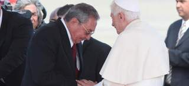
El papa Benedicto XVI ha llegado este lunes a Cuba -isla que no pisaba desde hace catorce años- para realizar una visita apostólica hasta el miércoles, en la segunda y última parte de la gira latinoamericana que comenzó en México.
En su llegada a la isla, el pontífice se refirió a los presos cubanos afirmando que lleva en su corazón "las justas aspiraciones y legítimos deseos de todos los cubanos, dondequiera que se encuentren" y de modo especial "de los jóvenes y los ancianos, de los adolescentes y los niños, de los enfermos y los trabajadores, de los presos y sus familiares, así como de los pobres y necesitados".
Benedicto XVI pidió también a los cubanos que luchen por una sociedad "abierta y renovada" y les exhortó a la reconciliación en un discurso en el que dijo que Cuba "mira ya al futuro", y condenó con firmeza el capitalismo salvaje "que ha dejado al hombre desprotegido frente a ciertos poderes".
Posteriormente, el pontífice se ha dirigido a los cubanos en la homilía de la misa que oficia en la plaza Antonio Maceo de Santiago de Cuba a la que asisten 200.000 cubanos venidos de toda la isla y del extranjero.
En su discurso hizo un llamamiento a los matrimonios, a quienes dijo que han de ser para sus hijos "signo real y visible del amor de Cristo por la Iglesia". "Cuba tiene necesidad del testimonio de su fidelidad, de su unidad, de su capacidad de acoger la vida humana, especialmente la más indefensa y necesitada", subrayó, en velada condena al aborto.
Benedicto XVI dijo también que Dios no sólo respeta la libertad humana, sino que parece necesitarla, y aseguró que Dios ha creado al hombre como fruto de su amor infinito "y por eso vivir conforme a su voluntad es el camino para encontrar nuestra genuina identidad, mientras que apartarse de Dios nos aleja de nosotros mismos y nos precipita en el vacío".
El papa también tuvo palabras de aliento para la Iglesia cubana y les dijo que sabe "con cuánto esfuerzo, audacia y abnegación" trabajan cada día "para que, en las circunstancias concretas de su país, y en este tiempo de la historia", refleje cada vez más su verdadero rostro "como lugar en el que Dios se acerca y encuentra con los hombres".
Las relaciones con Cuba
El avión, un Boeing 777 de la compañía Alitalia, aterrizó a las 14.20 hora local (20.20 hora española) en el aeropuerto de la ciudad oriental de Santiago de Cuba, a unos 950 kilómetros al este de La Habana. A pie de pista, el presidente cubano, Raúl Castro, vestido con traje oscuro, recibió al pontífice, al que estrechó la mano con una leve inclinación.
El presidente de Cuba destacó las "estrechas relaciones" entre la Santa Sede y su país en el discurso de bienvenida a Benedicto XVI, que inició este lunes una visita pastoral a la isla.
"Nos satisfacen las estrechas relaciones entre la Santa Sede y Cuba, que se han desarrollado sin interrupción durante setenta y seis años, siempre basadas en el respeto mutuo y en la coincidencia en asuntos vitales para la Humanidad, dijo Raúl Castro.
También destacó que la constitución cubana garantiza "plena libertad religiosa" a todos los ciudadanos, en una alocución donde aprovechó para denunciar el bloqueo de Estados Unidos contra la isla.
"La potencia más poderosa que ha conocido la Historia ha intentado despojarnos, infructuosamente, del derecho a la libertad, a la paz y a la justicia. (...) El pueblo cubano ha hecho tenaz resistencia, sabiendo que ejercemos también un derecho legítimo cuando seguimos nuestro propio camino", recalcó. "Sin razón a Cuba se le calumnia pero nosotros confiamos en que la verdad de la que jamás nos apartamos siempre se abre paso", prosiguió.
No olvidó en su discurso ante el pontífice citar a su hermano Fidel-retirado del poder desde 2006- para advertir sobre los peligros que amenazan a la especie humana. "Hay crecientes amenazas a la paz y la existencia de enormes arsenales nucleares es otro grave peligro para el ser humano", dijo el presidente cubano. "La corrupción de la política y la falta de verdadera democracia son males de nuestro tiempo", apostilló.
El papa Benedicto XVI, por su parte, afirmó que "todavía quedan muchos aspectos" en los que debe avanzar la relación entre la Iglesia católica y el Estado en Cuba.
También esperaban a Benedicto XVI en el aeropuerto el presidente de la Conferencia de Obispos Católicos cubanos y arzobispo de Santiago, Dionisio García, y el cardenal Jaime Ortega. Tres niños cubanos entregaron al papa flores blancas mientras le decían a coro "Bienvenido a Cuba".
2012-03-26T17:26:59Z
Mueren dos periodistas británicos de origen argelino por disparos de las fuerzas sirias
Mueren dos periodistas británicos de origen argelino por disparos de las fuerzas sirias
EFE
El ataque se ha producido en la provincia de Idleb, cerca de la frontera con Turquía.
Nasim Intriri y Walid Balidi habían entrado en Siria para rodar un documental sobre la revolución en ese país, según los Comités de Coordinación Local.
Los disparos han herido de gravedad a un opositor sirio que los acompañaba.
Según la ONU, desde el inicio de las revueltas en Siria han muerto al menos 8.000 personas y hay más de 200.000 desplazados y 30.000 refugiados.
Dos periodistas británicos de origen argelino han fallecido este lunes por disparos de las fuerzas de seguridad del régimen sirio en la provincia de Idleb, cerca de la frontera con Turquía, informaron fuentes opositoras.Activistas de los Comités de Coordinación Local (CCL) aseguraron en un comunicado que las dos víctimas, Nasim Intriri y Walid Balidi, murieron en el pueblo fronterizo de Darkush, después de entrar en Siria para rodar un documental sobre la revolución en ese país.Desde Idleb, un activista sirio que se identificó como Musaab al Arabi precisó que los disparos de las fuerzas leales al presidente sirio, Bachar al Asad, acabaron con la vida de estos dos periodistas independientes e hirieron de gravedad a un opositor sirio que los acompañaba.Más muertes por la represiónSegún los Comités de Coordinación Local, al menos 35 personas murieron este lunes en Siria, 19 de ellas en la provincia central de Homs, una de las zonas más castigadas por el régimen. Por su parte, la agencia oficial siria Sana aseguró que las autoridades sirias abortaron un plan de "un grupo de terroristas" que pretendían internarse en el país desde Turquía, concretamente entre los pueblos de Darkush y Salqin, en Idleb.Durante esa operación, se produjeron enfrentamientos entre los supuestos terroristas y las fuerzas de seguridad en los que murieron y resultaron heridos varios "terroristas", añadió Sana, que no precisó el número de muertos.Ninguna de estas informaciones ha podido ser verificada de forma independiente por las restricciones que las autoridades sirias han impuesto a los periodistas para trabajar.Desde mediados de marzo de 2011, las revueltas populares han puesto en jaque al régimen de Al Asad, que acusa a grupos armados y terroristas de estar detrás de la violencia.Según datos de la ONU, durante este periodo de tiempo en Siria al menos 8.000 personas han perdido la vida, mientras que más 200.000 se han desplazado a otras zonas dentro del país y 30.000 se han refugiado en el extranjero.
EFE
- El ataque se ha producido en la provincia de Idleb, cerca de la frontera con Turquía.
- Nasim Intriri y Walid Balidi habían entrado en Siria para rodar un documental sobre la revolución en ese país, según los Comités de Coordinación Local.
- Los disparos han herido de gravedad a un opositor sirio que los acompañaba.
- Según la ONU, desde el inicio de las revueltas en Siria han muerto al menos 8.000 personas y hay más de 200.000 desplazados y 30.000 refugiados.

Dos periodistas británicos de origen argelino han fallecido este lunes por disparos de las fuerzas de seguridad del régimen sirio en la provincia de Idleb, cerca de la frontera con Turquía, informaron fuentes opositoras.
Activistas de los Comités de Coordinación Local (CCL) aseguraron en un comunicado que las dos víctimas, Nasim Intriri y Walid Balidi, murieron en el pueblo fronterizo de Darkush, después de entrar en Siria para rodar un documental sobre la revolución en ese país.
Desde Idleb, un activista sirio que se identificó como Musaab al Arabi precisó que los disparos de las fuerzas leales al presidente sirio, Bachar al Asad, acabaron con la vida de estos dos periodistas independientes e hirieron de gravedad a un opositor sirio que los acompañaba.
Más muertes por la represión
Según los Comités de Coordinación Local, al menos 35 personas murieron este lunes en Siria, 19 de ellas en la provincia central de Homs, una de las zonas más castigadas por el régimen.
Por su parte, la agencia oficial siria Sana aseguró que las autoridades sirias abortaron un plan de "un grupo de terroristas" que pretendían internarse en el país desde Turquía, concretamente entre los pueblos de Darkush y Salqin, en Idleb.
Durante esa operación, se produjeron enfrentamientos entre los supuestos terroristas y las fuerzas de seguridad en los que murieron y resultaron heridos varios "terroristas", añadió Sana, que no precisó el número de muertos.
Ninguna de estas informaciones ha podido ser verificada de forma independiente por las restricciones que las autoridades sirias han impuesto a los periodistas para trabajar.
Desde mediados de marzo de 2011, las revueltas populares han puesto en jaque al régimen de Al Asad, que acusa a grupos armados y terroristas de estar detrás de la violencia.
Según datos de la ONU, durante este periodo de tiempo en Siria al menos 8.000 personas han perdido la vida, mientras que más 200.000 se han desplazado a otras zonas dentro del país y 30.000 se han refugiado en el extranjero.
2012-03-26T10:58:16Z
Convocan una huelga de deberes escolares para casa en Francia al verlos "una pérdida de tiempo"
Convocan una huelga de deberes escolares para casa en Francia al verlos "una pérdida de tiempo"
EFE
Los convocantes han sido la mayor asociación de padres de alumnos de Francia.
"Los niños tienen que mostrar en casa lo que han hecho en clase, no mostrar en clase lo que han hecho en casa", argumentan desde la asociación.
En Francia, una circular prohíbe desde 1956 encargar deberes escritos a los escolares de primaria, pero en muchos casos no se cumple.
La mayor asociación de padres de alumnos de Francia ha convocado este lunes una huelga de deberes escolares en casa de quince días para pedir el fin esas tareas porque considera que no es útil y aumenta la desigualdad. "Desde hace tiempo denunciamos los deberes en casa, cuya utilidad nadie ha probado y que no hacen más que acentuar las desigualdades entre los niños que pueden beneficiarse de ayuda y los que no", señaló la Federación de Consejos de Padres de Alumnos (FCPE) en un blog especialmente creado.La FCPE criticó el trabajo en casa como una forma de "subcontratación pedagógica" para las familias que genera "conflictos casi diarios" entre los niños y sus padres."Los niños tienen que mostrar en casa lo que han hecho en clase, no mostrar en clase lo que han hecho en casa", argumentó.Según la Federación, si los alumnos han entendido la lección en la escuela los deberes son una pérdida de tiempo, y si no la han aprendido no lo conseguirán cuando el profesor no está presente.La "quincena sin deberes"La FCPE quiere que todos los actores, incluidos los padres, los enseñantes o los directores de los centros, participen en la que denomina como "quincena sin deberes".Se trata de "reflexionar e imaginar otras relaciones familias-escuela y otros medios de comunicación distintos de los deberes y las notas, como lo hacen muchos enseñantes".En Francia una circular prohíbe desde 1956 encargar deberes escritos a los escolares de primaria, pero en muchos casos no se cumple.A favor de los deberesOtra de las grandes asociaciones de padres, la PEEP, es favorable a los deberes, y su secretaria general, Myriam Menez, lo justificó porque prepara a los niños a ser autónomos."Por supuesto, tiene que hacerse con mesura, pero repetir la lección es la mejor forma de aprenderla", argumentó Menez en declaraciones publicadas este lunes por Le Parisien.
EFE
- Los convocantes han sido la mayor asociación de padres de alumnos de Francia.
- "Los niños tienen que mostrar en casa lo que han hecho en clase, no mostrar en clase lo que han hecho en casa", argumentan desde la asociación.
- En Francia, una circular prohíbe desde 1956 encargar deberes escritos a los escolares de primaria, pero en muchos casos no se cumple.
La mayor asociación de padres de alumnos de Francia ha convocado este lunes una huelga de deberes escolares en casa de quince días para pedir el fin esas tareas porque considera que no es útil y aumenta la desigualdad.
"Desde hace tiempo denunciamos los deberes en casa, cuya utilidad nadie ha probado y que no hacen más que acentuar las desigualdades entre los niños que pueden beneficiarse de ayuda y los que no", señaló la Federación de Consejos de Padres de Alumnos (FCPE) en un blog especialmente creado.
La FCPE criticó el trabajo en casa como una forma de "subcontratación pedagógica" para las familias que genera "conflictos casi diarios" entre los niños y sus padres.
"Los niños tienen que mostrar en casa lo que han hecho en clase, no mostrar en clase lo que han hecho en casa", argumentó.
Según la Federación, si los alumnos han entendido la lección en la escuela los deberes son una pérdida de tiempo, y si no la han aprendido no lo conseguirán cuando el profesor no está presente.
La "quincena sin deberes"
La FCPE quiere que todos los actores, incluidos los padres, los enseñantes o los directores de los centros, participen en la que denomina como "quincena sin deberes".
Se trata de "reflexionar e imaginar otras relaciones familias-escuela y otros medios de comunicación distintos de los deberes y las notas, como lo hacen muchos enseñantes".
En Francia una circular prohíbe desde 1956 encargar deberes escritos a los escolares de primaria, pero en muchos casos no se cumple.
A favor de los deberes
Otra de las grandes asociaciones de padres, la PEEP, es favorable a los deberes, y su secretaria general, Myriam Menez, lo justificó porque prepara a los niños a ser autónomos.
"Por supuesto, tiene que hacerse con mesura, pero repetir la lección es la mejor forma de aprenderla", argumentó Menez en declaraciones publicadas este lunes por Le Parisien.
2012-03-26T07:40:23Z
Benedicto XVI inicia una visita a Cuba marcada por las buenas relaciones con el régimen
Benedicto XVI inicia una visita a Cuba marcada por las buenas relaciones con el régimen
AGENCIAS
El pontífice viaja a Cuba tras su visita a México.
El régimen escenificará sus buenas relaciones con el Vaticano.
Benedicto XVI podría ver a Fidel, pero no a los opositores.
Benedicto XVI llega este lunes a Cuba y se convierte en el segundo papa que visita la isla, en un momento de "actualización del socialismo", de mejores relaciones entre Iglesia y Estado y también denuncias de la disidencia por la represión de opositores."Bienvenido a Cuba su Santidad Benedicto XVI" se lee en cientos de carteles instalados en Santiago de Cuba y La Habana, los dos escenarios de la visita del pontífice, tras su estancia en México.El papa estará en la isla entre el 26 y el 28 de marzo y celebrará dos misas al aire libre, visitará el Santuario de la Caridad del Cobre, y se reunirá con el presidente Raúl Castro. Aunque no figura en el programa oficial, es posible que Joseph Ratzinger vea también al expresidente Fidel Castro, de 85 años y retirado del poder desde 2006 cuando una grave enfermedad le obligó a delegar en su hermano Raúl. Cuba, dice su gobierno, acogerá con "afecto y profundo respeto" a Benedicto XVI, que según la Iglesia transmitirá "ánimo y confianza" que ayudarán a construir el futuro de todos los cubanos y sus familias. La reconciliación es uno de los mensajes en que más ha insistido la Iglesia católica a propósito de la visita papal, que atraerá a la isla a cientos de peregrinos de Miami (EE.UU), el principal núcleo de la diáspora y del exilio cubano. En la calle, la mayoría de los cubanos ven positiva la visita del Pontífice, muchos recuerdan la de Juan Pablo II y su mensaje "que Cuba se abra al mundo y el mundo a Cuba" y hay otros que no creen que vaya a dejar cambios sustanciales.La "actualización" del régimen y la IglesiaLa Cuba que espera a Ratzinger está inmersa en "actualizar" su modelo socialista para superar una grave crisis económica con reformas que han abierto un resquicio a la iniciativa privada. Otra de las claves del momento en la isla es el "renacer" de la Iglesia Católica al convertirse en una activa interlocutora del Gobierno y mediadora en el proceso de excarcelación de presos políticos que tuvo lugar entre 2010 y 2011. La Iglesia insiste en que la visita del papa es pastoral pero muchos centran sus expectativas en los mensajes "políticos" que pueda trasladar el Obispo de Roma quien, a bordo del avión vaticano rumbo a México manifestó que la ideología marxista ya no responde a la realidad, unas palabras que el régimen cubano acogió con "respeto". Benedicto XVI no se reunirá con representantes de la disidencia, que espera que el papa sea "la voz de quienes no tienen voz en Cuba" y que ha denunciado que el régimen ha intensificado sus acciones represivas en los últimos días contra opositores pacíficos. La Comisión Cubana de Derechos Humanos y Reconciliación Nacional (CCDHRN) reportó este domingo que en los últimos cuatro días se han registrado decenas de detenciones arbitrarias así como amenazas e intimidaciones a disidentes para que no vayan a las misas papales. El Gobierno, que considera a los disidentes contrarrevolucionarios y mercenarios pagados por Estados Unidos, advierte de que "fracasarán" quienes quieran "obstaculizar esta visita apostólica con manipulaciones políticas". Joseph Ratzinger llega como "peregrino de la Caridad" en el Año Jubilar en el que se conmemoran los 400 años del hallazgo de la imagen mariana en 1612, cuando tres buscadores de sal la encontraron flotando en las aguas de la Bahía de Nipe. La Caridad, o "Cachita" como se la conoce popularmente, es la patrona del país y todo un símbolo de identidad y fe para los cubanos de dentro y fuera de la isla que trasciende del marco católico a la cultura e historia de Cuba.La agenda de BenedictoProcedente de México, Benedicto XVI aterrizará este lunes en Santiago de Cuba donde será recibido por Raúl Castro y donde oficiará su primera misa. Tras pernoctar en una vivienda construida para la ocasión en el Santuario del Cobre, el martes 27 visitará este recinto religioso para después partir hacia La Habana donde esa tarde será recibido de nuevo por el presidente cubano, esta vez en el Palacio de la Revolución. El miércoles 28, último día de la visita papal, Benedicto XVI oficiará su segunda y última misa en la emblemática Plaza de la Revolución, escenario de masivas celebraciones en la isla, y por la tarde realizará un recorrido en "papamóvil" hasta el aeropuerto desde donde regresará a Roma. La visita de Benedicto XVI a México y Cuba es la segunda gira del pontífice a Latinoamérica y la primera a países de habla española de la región tras la que realizó a Brasil en 2007.
AGENCIAS
- El pontífice viaja a Cuba tras su visita a México.
- El régimen escenificará sus buenas relaciones con el Vaticano.
- Benedicto XVI podría ver a Fidel, pero no a los opositores.
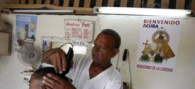
Benedicto XVI llega este lunes a Cuba y se convierte en el segundo papa que visita la isla, en un momento de "actualización del socialismo", de mejores relaciones entre Iglesia y Estado y también denuncias de la disidencia por la represión de opositores.
"Bienvenido a Cuba su Santidad Benedicto XVI" se lee en cientos de carteles instalados en Santiago de Cuba y La Habana, los dos escenarios de la visita del pontífice, tras su estancia en México.
El papa estará en la isla entre el 26 y el 28 de marzo y celebrará dos misas al aire libre, visitará el Santuario de la Caridad del Cobre, y se reunirá con el presidente Raúl Castro.
Aunque no figura en el programa oficial, es posible que Joseph Ratzinger vea también al expresidente Fidel Castro, de 85 años y retirado del poder desde 2006 cuando una grave enfermedad le obligó a delegar en su hermano Raúl.
Cuba, dice su gobierno, acogerá con "afecto y profundo respeto" a Benedicto XVI, que según la Iglesia transmitirá "ánimo y confianza" que ayudarán a construir el futuro de todos los cubanos y sus familias.
La reconciliación es uno de los mensajes en que más ha insistido la Iglesia católica a propósito de la visita papal, que atraerá a la isla a cientos de peregrinos de Miami (EE.UU), el principal núcleo de la diáspora y del exilio cubano.
En la calle, la mayoría de los cubanos ven positiva la visita del Pontífice, muchos recuerdan la de Juan Pablo II y su mensaje "que Cuba se abra al mundo y el mundo a Cuba" y hay otros que no creen que vaya a dejar cambios sustanciales.
La "actualización" del régimen y la Iglesia
La Cuba que espera a Ratzinger está inmersa en "actualizar" su modelo socialista para superar una grave crisis económica con reformas que han abierto un resquicio a la iniciativa privada.
Otra de las claves del momento en la isla es el "renacer" de la Iglesia Católica al convertirse en una activa interlocutora del Gobierno y mediadora en el proceso de excarcelación de presos políticos que tuvo lugar entre 2010 y 2011.
La Iglesia insiste en que la visita del papa es pastoral pero muchos centran sus expectativas en los mensajes "políticos" que pueda trasladar el Obispo de Roma quien, a bordo del avión vaticano rumbo a México manifestó que la ideología marxista ya no responde a la realidad, unas palabras que el régimen cubano acogió con "respeto".
Benedicto XVI no se reunirá con representantes de la disidencia, que espera que el papa sea "la voz de quienes no tienen voz en Cuba" y que ha denunciado que el régimen ha intensificado sus acciones represivas en los últimos días contra opositores pacíficos.
La Comisión Cubana de Derechos Humanos y Reconciliación Nacional (CCDHRN) reportó este domingo que en los últimos cuatro días se han registrado decenas de detenciones arbitrarias así como amenazas e intimidaciones a disidentes para que no vayan a las misas papales.
El Gobierno, que considera a los disidentes contrarrevolucionarios y mercenarios pagados por Estados Unidos, advierte de que "fracasarán" quienes quieran "obstaculizar esta visita apostólica con manipulaciones políticas".
Joseph Ratzinger llega como "peregrino de la Caridad" en el Año Jubilar en el que se conmemoran los 400 años del hallazgo de la imagen mariana en 1612, cuando tres buscadores de sal la encontraron flotando en las aguas de la Bahía de Nipe.
La Caridad, o "Cachita" como se la conoce popularmente, es la patrona del país y todo un símbolo de identidad y fe para los cubanos de dentro y fuera de la isla que trasciende del marco católico a la cultura e historia de Cuba.
La agenda de Benedicto
Procedente de México, Benedicto XVI aterrizará este lunes en Santiago de Cuba donde será recibido por Raúl Castro y donde oficiará su primera misa.
Tras pernoctar en una vivienda construida para la ocasión en el Santuario del Cobre, el martes 27 visitará este recinto religioso para después partir hacia La Habana donde esa tarde será recibido de nuevo por el presidente cubano, esta vez en el Palacio de la Revolución.
El miércoles 28, último día de la visita papal, Benedicto XVI oficiará su segunda y última misa en la emblemática Plaza de la Revolución, escenario de masivas celebraciones en la isla, y por la tarde realizará un recorrido en "papamóvil" hasta el aeropuerto desde donde regresará a Roma.
La visita de Benedicto XVI a México y Cuba es la segunda gira del pontífice a Latinoamérica y la primera a países de habla española de la región tras la que realizó a Brasil en 2007.
2012-03-26T04:46:43Z
Rajoy llega a Seúl para su primera cumbre internacional con Obama
Rajoy llega a Seúl para su primera cumbre internacional con Obama
EFE
Es su primera reunión internacional fuera de la Unión Europea y la primera con el presidente estadounidense.
Rajoy se incorporará a la cumbre Nuclear, en la que participan más de 50 países, en su segunda jornada.
Seúl acoge la Cumbre de Seguridad Nuclear bajo la sombra norcoreana.
El presidente del Gobierno español, Mariano Rajoy, llega este lunes a Seúl para participar en la II Cumbre de Seguridad Nuclear, su primera reunión internacional fuera de la Unión Europea y la primera ocasión también en la que se encontrará con el presidente estadounidense, Barack Obama.Rajoy emprendió viaje desde la base aérea de Torrejón de Ardoz (Madrid) tras seguir desde la sede del PP el desarrollo de las elecciones autonómicas del domingo, en las que, a pesar de haber ganado en Andalucía, su partido no ha logrado la mayoría absoluta necesaria para gobernar.La Cumbre de Seguridad Nuclear comienza en Seúl con la asistencia de más de cincuenta jefes de Estado y de Gobierno, pero Rajoy no llegará hasta última hora de la tarde, con lo que se incorporará a las reuniones el martes.Aunque tiene una apretada agenda de entrevistas -con los presidentes o primeros ministros de Chile, Turquía, Canadá, Sudáfrica, Kazajistán y Corea del Sur-, no está prevista ninguna entrevista formal con Obama.No obstante, la Casa Blanca ha garantizado que al menos habrá un momento para que ambos se encuentren.El papel de España en la IGTNAl margen de estas reuniones, Rajoy tomará la palabra ante el plenario de la cumbre para poner en valor el trabajo realizado por España como coordinadora del grupo que ha desarrollado durante los dos últimos años la Iniciativa Global contra el Terrorismo Nuclear (IGTN).El proyecto, puesto en marcha por EEUU y Rusia en 2006, busca aunar esfuerzos para mejorar los recursos que tiene cada país para prevenir ataques terroristas nucleares, proteger sus instalaciones y materiales radiactivos y fortalecer la cooperación ante situaciones de emergencia.El miércoles, ya concluida la cumbre, Rajoy será recibido por el presidente surcoreano, Lee Myung-bak, en la Casa Azul, su residencia oficial.Con este encuentro dará por terminada su estancia en Seúl y estará de vuelta en Madrid antes de que comience la huelga general del 29M.
EFE
- Es su primera reunión internacional fuera de la Unión Europea y la primera con el presidente estadounidense.
- Rajoy se incorporará a la cumbre Nuclear, en la que participan más de 50 países, en su segunda jornada.
- Seúl acoge la Cumbre de Seguridad Nuclear bajo la sombra norcoreana.
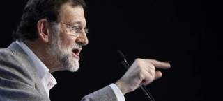
El presidente del Gobierno español, Mariano Rajoy, llega este lunes a Seúl para participar en la II Cumbre de Seguridad Nuclear, su primera reunión internacional fuera de la Unión Europea y la primera ocasión también en la que se encontrará con el presidente estadounidense, Barack Obama.
Rajoy emprendió viaje desde la base aérea de Torrejón de Ardoz (Madrid) tras seguir desde la sede del PP el desarrollo de las elecciones autonómicas del domingo, en las que, a pesar de haber ganado en Andalucía, su partido no ha logrado la mayoría absoluta necesaria para gobernar.
La Cumbre de Seguridad Nuclear comienza en Seúl con la asistencia de más de cincuenta jefes de Estado y de Gobierno, pero Rajoy no llegará hasta última hora de la tarde, con lo que se incorporará a las reuniones el martes.
Aunque tiene una apretada agenda de entrevistas -con los presidentes o primeros ministros de Chile, Turquía, Canadá, Sudáfrica, Kazajistán y Corea del Sur-, no está prevista ninguna entrevista formal con Obama.
No obstante, la Casa Blanca ha garantizado que al menos habrá un momento para que ambos se encuentren.
El papel de España en la IGTN
Al margen de estas reuniones, Rajoy tomará la palabra ante el plenario de la cumbre para poner en valor el trabajo realizado por España como coordinadora del grupo que ha desarrollado durante los dos últimos años la Iniciativa Global contra el Terrorismo Nuclear (IGTN).
El proyecto, puesto en marcha por EEUU y Rusia en 2006, busca aunar esfuerzos para mejorar los recursos que tiene cada país para prevenir ataques terroristas nucleares, proteger sus instalaciones y materiales radiactivos y fortalecer la cooperación ante situaciones de emergencia.
El miércoles, ya concluida la cumbre, Rajoy será recibido por el presidente surcoreano, Lee Myung-bak, en la Casa Azul, su residencia oficial.
Con este encuentro dará por terminada su estancia en Seúl y estará de vuelta en Madrid antes de que comience la huelga general del 29M.
2012-03-25T23:07:15Z
Un nuevo terremoto de 7,2 grados en la escala Richter afecta la zona central de Chile
Un nuevo terremoto de 7,2 grados en la escala Richter afecta la zona central de Chile
20MINUTOS.ES/AGENCIAS
Hasta ahora se ha informado que hay tres heridos, pero no de gravedad.
Se produce en la región del Maule, a unos 400 kilómetros al sur de Santiago.
Casi 7 mil personas fueron evacuadas en la franja costera de esta región chilena.
Se trata del seísmo más intenso desde el devastador temblor que se produjo en febrero de 2010.
Un fuerte y prolongado seísmo de 7,2 grados de magnitud en la escala abierta de Richter afectó este domingo la zona centro y sur de Chile . El vicepresidente de Chile y ministro del Interior, Rodrigo Hinzpeter, informó de que "hay algunas personas heridas" , pero puntualizó que las lesiones "no son de gravedad".Según el Servicio Sismológico de la Universidad de Chile, el movimiento, que se percibió a las 19.37 horas de la tarde, fue de 6'8 grados richter, mientras que sismología de Estados Unidos, señala que el movimiento fue de 7,2 grados.El temblor tuvo su epicentro a unos 63 kilómetros al noroeste de Talca, una de las ciudades más afectadas por el terremoto del 27 de febrero del 2010.En la capital chilena, mucha gente salió corriendo a lugares abiertos ya que el temblor tuvo una duración de al menos 40 segundos.Radio Bíobio informa de que el seísmo en la región del Maule, a unos 400 kilómetros al sur de Santiago, tuvo una intensidad de siete grados en la escala internacional de Mercalli, que va del uno al doce.Riesgo de tsunamiEn un principio las autoridades descartaron el riesgo de tsunami, mientras que la Oficina Nacional de Emergencia dio orden de evacuar el borde costero en la región del Maule, en el sur de Chile "por razones preventivas".Cerca de 7.000 personas fueron evacuadas la noche del domingo en la sureña región. Los habitantes, que han sido situados a 30 metros sobre el nivel del mar, encendieron algunas fogatas para pasar la noche, a la espera de que la situación se normalice y se descarte definitivamente algún peligro en la costa.Según el ministro portavoz de Gobierno, Andrés Chadwick, "Esto no obedece a una información dada por el Servicio Hidrográfico y Oceanográfico de la Armada (SHOA), pero si obedece al director de la Oficina Nacional de Emergencia de esa zona y a observaciones que se han realizado en algunos puntos del mar", precisó Chadwick.El ministro subrayó que "está contemplado que si hay una observación visual se debe realizar la evacuación preventiva".El sector costero corresponde al epicentro del fuerte temblor, donde sus habitantes igualmente escaparon hacia lugares abiertos en prevención de un tsunami.Las autoridades han aplicado la medida porque después del terremoto registrado 27 de febrero de 2010 se modificaron los protocolos de evacuación, para hacerlos más cautelosos.El Servicio Geológico de Estados Unidos (USGS) había informado de de que el sismo en la zona central de Chile tenía una magnitud de 7,2 grados, por lo que la Onemi, al tratarse de un temblor superior a 7 en la escala Richter, ordenó la evacuación preventiva del borde costero.Por otro lado, los servicios básicos no dejaron de funcionar, si bien las líneas telefónicas sufrieron saturación debido a la sobrecarga de llamadas de personas para interesarse por la situación de los familiares y amigos.La República de Chile está situada en una región altamente sísmica, por lo que la sucesión de temblores es algo a lo que los chilenos están acostumbrados.Sin embargo, el intenso temblor de 2010, que generó también el terror ante un posible tsunami, removió los cimientos de la sociedad entre denuncias de la negligencia de los poderes públicos y la devastación de importantes sectores económicos como el vinícola.
20MINUTOS.ES/AGENCIAS
- Hasta ahora se ha informado que hay tres heridos, pero no de gravedad.
- Se produce en la región del Maule, a unos 400 kilómetros al sur de Santiago.
- Casi 7 mil personas fueron evacuadas en la franja costera de esta región chilena.
- Se trata del seísmo más intenso desde el devastador temblor que se produjo en febrero de 2010.
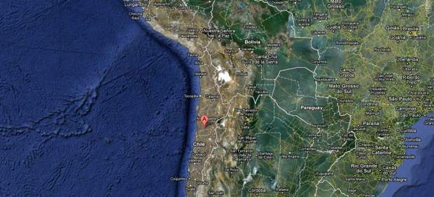
Un fuerte y prolongado seísmo de 7,2 grados de magnitud en la escala abierta de Richter afectó este domingo la zona centro y sur de Chile . El vicepresidente de Chile y ministro del Interior, Rodrigo Hinzpeter, informó de que "hay algunas personas heridas" , pero puntualizó que las lesiones "no son de gravedad".
Según el Servicio Sismológico de la Universidad de Chile, el movimiento, que se percibió a las 19.37 horas de la tarde, fue de 6'8 grados richter, mientras que sismología de Estados Unidos, señala que el movimiento fue de 7,2 grados.
El temblor tuvo su epicentro a unos 63 kilómetros al noroeste de Talca, una de las ciudades más afectadas por el terremoto del 27 de febrero del 2010.
En la capital chilena, mucha gente salió corriendo a lugares abiertos ya que el temblor tuvo una duración de al menos 40 segundos.
Radio Bíobio informa de que el seísmo en la región del Maule, a unos 400 kilómetros al sur de Santiago, tuvo una intensidad de siete grados en la escala internacional de Mercalli, que va del uno al doce.
Riesgo de tsunami
En un principio las autoridades descartaron el riesgo de tsunami, mientras que la Oficina Nacional de Emergencia dio orden de evacuar el borde costero en la región del Maule, en el sur de Chile "por razones preventivas".
Cerca de 7.000 personas fueron evacuadas la noche del domingo en la sureña región. Los habitantes, que han sido situados a 30 metros sobre el nivel del mar, encendieron algunas fogatas para pasar la noche, a la espera de que la situación se normalice y se descarte definitivamente algún peligro en la costa.
Según el ministro portavoz de Gobierno, Andrés Chadwick, "Esto no obedece a una información dada por el Servicio Hidrográfico y Oceanográfico de la Armada (SHOA), pero si obedece al director de la Oficina Nacional de Emergencia de esa zona y a observaciones que se han realizado en algunos puntos del mar", precisó Chadwick.
El ministro subrayó que "está contemplado que si hay una observación visual se debe realizar la evacuación preventiva".
El sector costero corresponde al epicentro del fuerte temblor, donde sus habitantes igualmente escaparon hacia lugares abiertos en prevención de un tsunami.
Las autoridades han aplicado la medida porque después del terremoto registrado 27 de febrero de 2010 se modificaron los protocolos de evacuación, para hacerlos más cautelosos.
El Servicio Geológico de Estados Unidos (USGS) había informado de de que el sismo en la zona central de Chile tenía una magnitud de 7,2 grados, por lo que la Onemi, al tratarse de un temblor superior a 7 en la escala Richter, ordenó la evacuación preventiva del borde costero.
Por otro lado, los servicios básicos no dejaron de funcionar, si bien las líneas telefónicas sufrieron saturación debido a la sobrecarga de llamadas de personas para interesarse por la situación de los familiares y amigos.
La República de Chile está situada en una región altamente sísmica, por lo que la sucesión de temblores es algo a lo que los chilenos están acostumbrados.
Sin embargo, el intenso temblor de 2010, que generó también el terror ante un posible tsunami, removió los cimientos de la sociedad entre denuncias de la negligencia de los poderes públicos y la devastación de importantes sectores económicos como el vinícola.
2012-03-25T21:16:28Z
El partido cristianodemócrata de Merkel gana las elecciones en la región alemana del Sarre
El partido cristianodemócrata de Merkel gana las elecciones en la región alemana del Sarre
EFE
La CDU de la canciller obtiene el 35,2% de los votos y su rival en la oposición, los socialdemócratas, un 30,6%.
El Partido Pirata obtiene el 7,4% de los votos y el socio de Merkel en Berlín, el Partido Liberal, el 1,2%.
Los sondeos apuntaban a un ajustado empate entre los conservadores de la CDU y los socialdemócratas.
Son las primeras elecciones en Alemania de 2012 que se convocaron por la ruptura de la coalición de Gobierno.
La Unión Cristianodemócrata (CDU) de la canciller Angela Merkel ha revalidado este domingo su condición de primera fuerza en la región alemana del Sarre (fronteriza con Francia), según el escrutinio final de las autoridades regionales. La CDU ha conseguido un 35,2% de los votos, mientras que el Partido Socialdemócrata (SPD) se quedó en un 30,6%, de acuerdo con esas proyecciones.Todo apunta a que el nuevo gobierno será una gran coalición, entre la CDU y el SPD, liderada por la hasta ahora jefa del gobierno, la conservadora Annegret Kramp-Karnenbauer. La CDU ha obtenido 0,7% más que en las anteriores regionales de 2009 y el SPD ha registrado un aumento de casi seis puntos.La victoria en la región de Sarre es la primera de Merkel en 2012 tras un año de derrotas en el que se renovaban los parlamentos de siete de los 16 estados federados de Alemania. En 2011, los socialdemócratas del SPD se impusieron en cinco de los comicios regionales (Hamburgo, Renania-Palatinado, Bremen y Mecklemburgo-Antepomerania y la ciudad-estado de Berlín) y Los Verdes ganaron de forma histórica en Baden-Württemberg, ahondando la crisis de la CDU. El partido de Merkel sólo logró mantener su liderazgo en Sajonia-Anhalt. Los comicios, que abren el año electoral alemán, han supuesto un duro golpe para el Partido Liberal (FDP), socio de Merkel en Berlín, que ha obtenido un 1,2% (frente al 9,2% cosechado en 2009) y se queda fuera de la nueva cámara. Se trata de un récord a la baja para la formación que acentúa así la caída en picado que sufre desde que se convirtió en socio de Merkel, en 2009.El Partido Pirata de Alemania, al contrario, partía como extraparlamentarios y ha obtenido hasta el 7,4%, lo que le consolida como fuerza política después de que en septiembre de 2011 lograran sus primeros escaños en la cámara de la ciudad-estado de Berlín.La Izquierda, liderada por Oskar Lafontaine, jefe de gobierno en la región del Sarre entre 1985 y 1998, se ha mantenido como tercera fuerza, con un 16,1%, no sin sufrir un importante descenso de votos respecto al 21,3% obtenidos en las anteriores regionales. Los Verdes han quedado en la cuerda floja del 5% (frente al 5,9% de 2009), mínimo para obtener escaños.Los colegios electorales del 'land' alemán del Sarre, fronterizo con Francia, han abierto a las 06.00 del domingo para las elecciones regionales de ese estado federado y han cerrado a las 16.00. Los sondeos apuntaban a un ajustado empate entre los conservadores de Angela Merkel y la oposición socialdemócrata. Los comicios se han celebrado por anticipado tras la ruptura de la coalición de gobierno que integraron la Unión Cristianodemócrata (CDU) de la canciller, más el Partido Liberal (FDP) y los Verdes.Unos 800.000 electores del estado federado de Sarre estaban convocados a las urnas en las primeras elecciones en Alemania de 2012, que preceden a las de los 'länder' de Schleswig Holstein (norte) y de Renania del Norte-Westfalia (oeste), el 6 y el 13 de mayo. En ambos casos se esperan nuevos golpes electorales para los liberales, ya que los pronósticos apuntan a que se quedará fuera de las dos cámaras regionales.
EFE
- La CDU de la canciller obtiene el 35,2% de los votos y su rival en la oposición, los socialdemócratas, un 30,6%.
- El Partido Pirata obtiene el 7,4% de los votos y el socio de Merkel en Berlín, el Partido Liberal, el 1,2%.
- Los sondeos apuntaban a un ajustado empate entre los conservadores de la CDU y los socialdemócratas.
- Son las primeras elecciones en Alemania de 2012 que se convocaron por la ruptura de la coalición de Gobierno.
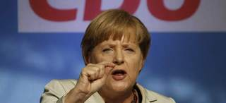
La Unión Cristianodemócrata (CDU) de la canciller Angela Merkel ha revalidado este domingo su condición de primera fuerza en la región alemana del Sarre (fronteriza con Francia), según el escrutinio final de las autoridades regionales. La CDU ha conseguido un 35,2% de los votos, mientras que el Partido Socialdemócrata (SPD) se quedó en un 30,6%, de acuerdo con esas proyecciones.
Todo apunta a que el nuevo gobierno será una gran coalición, entre la CDU y el SPD, liderada por la hasta ahora jefa del gobierno, la conservadora Annegret Kramp-Karnenbauer. La CDU ha obtenido 0,7% más que en las anteriores regionales de 2009 y el SPD ha registrado un aumento de casi seis puntos.
La victoria en la región de Sarre es la primera de Merkel en 2012 tras un año de derrotas en el que se renovaban los parlamentos de siete de los 16 estados federados de Alemania. En 2011, los socialdemócratas del SPD se impusieron en cinco de los comicios regionales (Hamburgo, Renania-Palatinado, Bremen y Mecklemburgo-Antepomerania y la ciudad-estado de Berlín) y Los Verdes ganaron de forma histórica en Baden-Württemberg, ahondando la crisis de la CDU. El partido de Merkel sólo logró mantener su liderazgo en Sajonia-Anhalt.
Los comicios, que abren el año electoral alemán, han supuesto un duro golpe para el Partido Liberal (FDP), socio de Merkel en Berlín, que ha obtenido un 1,2% (frente al 9,2% cosechado en 2009) y se queda fuera de la nueva cámara. Se trata de un récord a la baja para la formación que acentúa así la caída en picado que sufre desde que se convirtió en socio de Merkel, en 2009.
El Partido Pirata de Alemania, al contrario, partía como extraparlamentarios y ha obtenido hasta el 7,4%, lo que le consolida como fuerza política después de que en septiembre de 2011 lograran sus primeros escaños en la cámara de la ciudad-estado de Berlín.
La Izquierda, liderada por Oskar Lafontaine, jefe de gobierno en la región del Sarre entre 1985 y 1998, se ha mantenido como tercera fuerza, con un 16,1%, no sin sufrir un importante descenso de votos respecto al 21,3% obtenidos en las anteriores regionales. Los Verdes han quedado en la cuerda floja del 5% (frente al 5,9% de 2009), mínimo para obtener escaños.
Los colegios electorales del 'land' alemán del Sarre, fronterizo con Francia, han abierto a las 06.00 del domingo para las elecciones regionales de ese estado federado y han cerrado a las 16.00. Los sondeos apuntaban a un ajustado empate entre los conservadores de Angela Merkel y la oposición socialdemócrata. Los comicios se han celebrado por anticipado tras la ruptura de la coalición de gobierno que integraron la Unión Cristianodemócrata (CDU) de la canciller, más el Partido Liberal (FDP) y los Verdes.
Unos 800.000 electores del estado federado de Sarre estaban convocados a las urnas en las primeras elecciones en Alemania de 2012, que preceden a las de los 'länder' de Schleswig Holstein (norte) y de Renania del Norte-Westfalia (oeste), el 6 y el 13 de mayo. En ambos casos se esperan nuevos golpes electorales para los liberales, ya que los pronósticos apuntan a que se quedará fuera de las dos cámaras regionales.
2012-03-25T17:45:42Z
El homosexual chileno que sufrió una paliza de un grupo neonazi, declarado con muerte cerebral
El homosexual chileno que sufrió una paliza de un grupo neonazi, declarado con muerte cerebral
EFE
Daniel Zamudio, de 24 años, llevaba desde principios de mes ingresado de gravedad en el hospital Posta Central de Santiago de Chile.
Los integrantes del grupo de neonazis que le agredieron brutalmente fueron detenidos por la policía.
El abogado de la familia de Daniel dice que si llega a fallecer "estaríamos ante un delito de homicidio en grado consumado".
Un joven homosexual chileno que sufrió una paliza por parte de un grupo de neonazis, fue declarado con muerte cerebral por los médicos que le han atendido desde principios de mes cuando sufrió el alevoso ataque en la capital chilena.Así lo informaron este domingo los médicos de la Posta Central, el mayor hospital de primeros auxilios de Santiago, quienes agregaron que su deterioro de salud de Daniel Zamudio, de 24 años, llegó a tal punto que no podrá ser donante de órganos.Integrantes del grupo de neonazis que fueron detenidos por la policía, agredieron brutalmente al muchacho el pasado 6 de marzo.Le arrancaron parte de una oreja, le marcaron el cuerpo con símbolos nazis, le golpearon varias veces con una gran piedra el estómago y sus piernas e hicieron palanca en una de ellas hasta que sus huesos sonaron y la fracturaron."Homicidio en grado consumado"El Movimiento de Integración y Liberación Homosexual (Movilh), familiares y amigos de Daniel Zamudio, cuyo desenlace fatal se podría desencadenar en las próximas 48 horas según los médicos, realizaron la pasa noche una vigilia frente a la Posta Central.El abogado de la familia de Zamudio, Jaime Silva dijo a los periodistas que si Daniel llega a fallecer "estaríamos ante un delito de homicidio en grado consumado"."El ordenamiento jurídico chileno considera como uno de los hechos más graves y por lo tanto pone la pena máxima que es presidio perpetuo calificado, es decir 40 años de presidio efectivo antes de poder de postular a algún tipo de beneficio", recalcó Silva en declaraciones a Radio ADN.En tanto, el presidente del Movilh, Rolando Jiménez, volvió a señalar que "es de la mayor gravedad que todavía en Chile haya grupos como los neonazis que actúen con absoluta impunidad, y eso se da, entre otras cosas, porque la clase política y el Estado chileno no se han hecho cargo de lo peligrosos que son estos grupos".ReaccionesEn su oportunidad, hasta el cantante puertorriqueño Ricky Martin rechazó este ataque. "No más odio,no más discriminación. Espero que se haga justicia YA. Mucha luz para Daniel y toda su familia. #fuerzadanielzamudio", escribió el artista en la red social Twitter.Por su parte, el ministro del Interior, Rodrigo Hinzpeter, anunció que el Ejecutivo ha puesto en carácter de urgencia el proyecto de ley contra la discriminación aprobado por el Senado y que se encuentra en trámite en la Cámara de Diputados.La Intendenta de la Región Metropolitana de Santiago, Cecilia Pérez, llegó hasta la Posta Central para conversar con los médicos que atienden a Zamudio, pero no hizo declaraciones a los periodistas apostados en el lugar.
EFE
- Daniel Zamudio, de 24 años, llevaba desde principios de mes ingresado de gravedad en el hospital Posta Central de Santiago de Chile.
- Los integrantes del grupo de neonazis que le agredieron brutalmente fueron detenidos por la policía.
- El abogado de la familia de Daniel dice que si llega a fallecer "estaríamos ante un delito de homicidio en grado consumado".
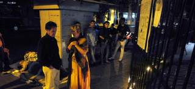
Un joven homosexual chileno que sufrió una paliza por parte de un grupo de neonazis, fue declarado con muerte cerebral por los médicos que le han atendido desde principios de mes cuando sufrió el alevoso ataque en la capital chilena.
Así lo informaron este domingo los médicos de la Posta Central, el mayor hospital de primeros auxilios de Santiago, quienes agregaron que su deterioro de salud de Daniel Zamudio, de 24 años, llegó a tal punto que no podrá ser donante de órganos.
Integrantes del grupo de neonazis que fueron detenidos por la policía, agredieron brutalmente al muchacho el pasado 6 de marzo.
Le arrancaron parte de una oreja, le marcaron el cuerpo con símbolos nazis, le golpearon varias veces con una gran piedra el estómago y sus piernas e hicieron palanca en una de ellas hasta que sus huesos sonaron y la fracturaron.
"Homicidio en grado consumado"
El Movimiento de Integración y Liberación Homosexual (Movilh), familiares y amigos de Daniel Zamudio, cuyo desenlace fatal se podría desencadenar en las próximas 48 horas según los médicos, realizaron la pasa noche una vigilia frente a la Posta Central.
El abogado de la familia de Zamudio, Jaime Silva dijo a los periodistas que si Daniel llega a fallecer "estaríamos ante un delito de homicidio en grado consumado".
"El ordenamiento jurídico chileno considera como uno de los hechos más graves y por lo tanto pone la pena máxima que es presidio perpetuo calificado, es decir 40 años de presidio efectivo antes de poder de postular a algún tipo de beneficio", recalcó Silva en declaraciones a Radio ADN.
En tanto, el presidente del Movilh, Rolando Jiménez, volvió a señalar que "es de la mayor gravedad que todavía en Chile haya grupos como los neonazis que actúen con absoluta impunidad, y eso se da, entre otras cosas, porque la clase política y el Estado chileno no se han hecho cargo de lo peligrosos que son estos grupos".
Reacciones
En su oportunidad, hasta el cantante puertorriqueño Ricky Martin rechazó este ataque. "No más odio,no más discriminación. Espero que se haga justicia YA. Mucha luz para Daniel y toda su familia. #fuerzadanielzamudio", escribió el artista en la red social Twitter.
Por su parte, el ministro del Interior, Rodrigo Hinzpeter, anunció que el Ejecutivo ha puesto en carácter de urgencia el proyecto de ley contra la discriminación aprobado por el Senado y que se encuentra en trámite en la Cámara de Diputados.
La Intendenta de la Región Metropolitana de Santiago, Cecilia Pérez, llegó hasta la Posta Central para conversar con los médicos que atienden a Zamudio, pero no hizo declaraciones a los periodistas apostados en el lugar.
2012-03-25T16:52:06Z
Miles de personas se manifiestan en Francia contra el racismo tras los asesinatos de Toulouse
Miles de personas se manifiestan en Francia contra el racismo tras los asesinatos de Toulouse
EFE
En París, unas 5.000 personas marchan en silencio entre la Bastilla y Nation.
Han acudido, entre otros, el alcalde de París y el extenista y cantante Yannick Noah.
Otra manifestación se ha convocado en Toulouse para protestar por los asesinatos del islamista radical Mohamed Merah.
Miles de personas se han manifestado este domingo en diferentes ciudades de Francia contra el racismo, el antisemitismo y el terrorismo, tras los asesinatos de siete personas en la región de Toulouse a manos del radical islamista Mohamed Merah. La mayor manifestación ha tenido lugar en París, donde unas 5.000 personas, según los organizadores, marcharon en silencio entre las plazas de la Bastilla y Nation.El acto ha sido convocado por diversas asociaciones antirracistas de Francia, el Partido Socialista y la Asociación Francesa de Víctimas del Terrorismo.Entre los participantes de la manifestación figuraba el alcalde de París, el socialista Bertrand Delanoë, y artistas como la actriz y cantante Jean Brikin o el ex tenista y también cantante Yannick Noah.La otra gran manifestación se ha celebrado en Toulouse, donde también se han concentrado en silencio cientos de personas en protesta por los siete asesinatos cometidos entre el 11 y el 19 pasados cometidos por Merah.
EFE
- En París, unas 5.000 personas marchan en silencio entre la Bastilla y Nation.
- Han acudido, entre otros, el alcalde de París y el extenista y cantante Yannick Noah.
- Otra manifestación se ha convocado en Toulouse para protestar por los asesinatos del islamista radical Mohamed Merah.
Miles de personas se han manifestado este domingo en diferentes ciudades de Francia contra el racismo, el antisemitismo y el terrorismo, tras los asesinatos de siete personas en la región de Toulouse a manos del radical islamista Mohamed Merah. La mayor manifestación ha tenido lugar en París, donde unas 5.000 personas, según los organizadores, marcharon en silencio entre las plazas de la Bastilla y Nation.
El acto ha sido convocado por diversas asociaciones antirracistas de Francia, el Partido Socialista y la Asociación Francesa de Víctimas del Terrorismo.
Entre los participantes de la manifestación figuraba el alcalde de París, el socialista Bertrand Delanoë, y artistas como la actriz y cantante Jean Brikin o el ex tenista y también cantante Yannick Noah.
La otra gran manifestación se ha celebrado en Toulouse, donde también se han concentrado en silencio cientos de personas en protesta por los siete asesinatos cometidos entre el 11 y el 19 pasados cometidos por Merah.